Faites de la musique sur ordinateur avec FL Studio
Bonjour et bienvenue !
Vous avez envie de faire de la musique, mais vous ne savez jouer d'aucun instrument et vous ne savez pas comment vous y prendre ? Eh bien restez là, vous êtes au bon endroit.
Dans ce tutoriel, je vais vous présenter Fruity Loops Studio, renommé FL Studio depuis sa quatrième version, le moyen le plus rapide d'éditer tout ce qui vous passe par la tête et d'en faire des chefs-d'œuvre !
c'est un logiciel dit semi-professionnel car il est très utilisé chez les grands de la musique électronique comme David Guetta, mais également accessible à tous ceux qui prennent la peine d'apprendre à s'en servir.
Bon, on va démarrer tranquillement pour ce premier chapitre.
Vos oreilles ont encore un peu de sursis mais je vous préviens, dans le prochain chapitre, ça va faire du bruit ! Alors profitez de ce calme éphémère. :D
Fruity Loops est un logiciel de création musicale assistée par ordinateur (MAO). Il en existe d'autres, mais j'ai choisi celui-ci d'abord pour sa simplicité et surtout pour la puissance de son séquenceur.
Euh... c'est quoi, un séquenceur ?
Citation : Wikipédia
Un séquenceur est un dispositif qui produit ou analyse une séquence.
Hum, ça ne nous avance pas trop, je vais essayer avec « séquenceur musical ».
Citation : Wikipédia
Un séquenceur musical est un équipement permettant de faire jouer automatiquement un instrument de musique électronique ; il peut être de type matériel ou logiciel.
Voila qui est mieux. Concrètement, c'est l'endroit où l'on va éditer les notes de musique. Donc comme je le disais, celui de Fruity Loops (que je noterai FLS dans la suite du cours) est pour moi plus pratique à utiliser que celui des autres logiciels de MAO.
Il est aussi très agréable à utiliser une fois qu'on a pris ses repères. De nombreux effets et outils sont présents pour éditer et embellir le son, c'est un outils très complet pour la production musicale. Il est idéale pour tout styles électronique confondue mais ça ne l’empêche pas d’êtres excellent dans d'autres styles. FL Studio vous permettra aussi de faire des enregistrements multi-pistes si vous êtes musicien.
Lorsque vous achetez FL Studio, c'est pour la vie ! En effet vous ne payez qu'une fois pour le logiciel et toutes ses mises à jours futures. Ne vous inquiétez pas, il existe tout de même une version d'essai que je vous propose de télécharger sans plus attendre.
L'installation se déroule comme tout autre programme, lancez-le une fois installé.
Vous devriez tomber sur le morceau de démonstration, mais avant de lancer la lecture, allez dans le menu Option / Audio settings.
Dans Input / output, vérifiez que ASIO4ALL v2 est bien sélectionné. ASIO4ALL v2 est utile si on a une carte son intégrée ou de mauvaise qualité. Plus tard, quand vos projets seront longs et compliqués, la carte son risquerait de ne pas supporter et des lags pourraient apparaître. ASIO4ALL v2 rectifie ceci et permet d'avoir une bonne latence même avec de gros projets.
Pour le reste, vous pouvez laisser les valeurs par défaut.
Vous possédez un clavier midi ? Voici comment l'installer.
C'est quoi un clavier midi ?
Il s'agit d'un clavier de piano que l'on branche à l'ordinateur pour pouvoir ensuite jouer dans FL Studio le plus naturellement possible. Il n'est bien entendu pas indispensable d'en avoir un pour utiliser FL Studio. J'en ai moi même fait l'acquisition que très récemment, et je doit dire que c'est tout de même très pratique (surtout niveau créativité).
Exemple de clavier midi 25 notes.
Donc pour installer un clavier midi il faut d'abord le brancher et ensuite aller dans "MIDI settings" F10 :
Faites un "Rescan MIDI device" en bas puis activez les périphériques que vous voulez utiliser dans l'espace "Input" :
Il existe aussi des contrôleurs midi qui possèdent des boutons et des potentiomètres que l'on peut assigner à certains paramètres du logiciel.
C'est déjà fini, tout est installé et configuré. Il ne reste plus qu'à placer les notes sur le séquenceur, chose que l'on va immédiatement commencer dans le chapitre suivant.
C'est l'un des plus puissant tout logiciel de musique confondue, c'est la raison pour laquelle j'ai choisi de vous présenter FL Studio. Je parle bien entendu du séquenceur !
Son objectif principal est de jouer les notes q'on lui attribue, mais celui de FL Studio regorge d'outils plus utiles les uns que les autres pour faire des vos accords et mélodies des véritables chefs d’œuvres.
Bouton raccourci permettant d'ouvrir tous ces éléments.
Tout d'abord, créez un nouveau projet dans le menu File / New. Vous pouvez fermer la liste de lecture et la table de mixage si elles sont ouvertes car on ne va pas s'en servir pour l'instant, ne gardez que le séquenceur et l'explorateur.
Il apparaît quatre instruments dans le séquenceur : kick, clap, hat et snare. Ce sont des percussions ; vous pouvez écouter le son de chacune d'elles en cliquant dans leur petit carré respectif à côté pour les allumer, puis en appuyant sur play ou sur la barre d'espace.
Une fois qu'on lance la lecture, on s'aperçoit que FLS fait une boucle (loop en anglais). Dès que la lecture arrive à la fin elle revient automatiquement au début sans aucune coupure. Ce principe de boucle est la base de ce logiciel. Par exemple quand vous allez créer une musique, vous ferez une petite boucle de percussion comme vous venez de le faire, que vous allez répéter jusqu'à la fin de votre morceau (avec de temps en temps quelques variations bien entendu).
Vous pouvez modifier la longueur de la boucle comme sur l'image ci-dessous :
Vous pouvez cliquer sur le nom de l'instrument pour ouvrir une page d'options spécifiques à celui-ci. Vous retrouvez le nom du fichier de l'échantillon, la forme d'onde en bas de la fenêtre, ainsi que quelques effets pour la modifier. (j'expliquerais le contenu de cette fenêtre dans un chapitre annexe)
Dans l'exemple qui suit, j'ai ouvert FL Key (menu "Channels/add one/FL Key") et modifié les notes jouées en faisant apparaître un piano :
Le changement de note se fait par un simple clic. Pour rendre une note inactive il suffit de faire un clic droit sur celle-ci.
On peut également changer la valeur de certains paramètres :
C'est pas ce qu'il y a de plus pratique, tu nous avait dit que le séquenceur était puissant ?
J'y viens : prenez FL Key par exemple (menu Chanels/add one/FL Key), glissez-le dans le séquenceur, faites un clic droit dessus et choisissez piano roll.
Ajouter des notes
Deux outils sont à votre disposition pour dessiner des notes :
Le crayon
: vous permet de dessiner notes par notes. En maintenant la touche SHIFT gauche vous pouvez définir la longueur de la note en la dessinant.
Le pinceau
: vous permet de dessiner plusieurs notes à la fois en maintenant le clic.
Lorsque vous placez des notes, vous pouvez à tout moment modifier la grille d'alignement
. Plus la note sera haute, plus elle sera aiguë et inversement. Pour supprimer une note il suffit de faire un clic droit sur celle-ci, ou bien d'utiliser l'outil de suppression
.
La sélection
Il existe plusieurs moyen pour sélectionner ou dé-sélectionner des notes. Le plus simple et le plus rapide est de maintenir la touche CTRL en cliquant sur une note ou en dessinant un rectangle autour de plusieurs d'entres elles (raccourci de l'outil
). En maintenant CTRL + SHIFT vous pouvez ajouter ou enlever des notes à la sélection courante.
un peu plus spécial, le lasso magique ! Il faut l'activer dans Menu\Select\Magic lasso. Il vous permet de sélectionner un groupe de note en dessinant un cercle autour sans cliquer. Il faut prendre soins de n'avoir aucune sélection active pour utiliser cet outil.
Egalement très pratique, CTRL + clic sur la barre de temps permet de sélectionner toutes les notes qui s'y trouvent et de créer une boucle. Pour dé-sélectionner toutes les note il vous suffit de cliquer droit dans une zone libre.
Vous avez la possibilité de grouper des notes avec SHIFT + g, cela vous permet de les modifier comme si elle sont sélectionné même si elle ne le sont pas.
La sélection extensible
Lorsque vous avez une sélection de plusieurs notes, vous pouvez toutes les redimensionner en tirant l'extrémité d'une d'entre elles :
Mais on peut aussi déplacer les notes en même temps que le redimensionnement :
Observez le petit cercle à droite, c'est comme si j'avais divisé par deux la vitesse de la sélection d'un simple geste.
Propriété d'une note
Double cliquez sur une note pour afficher ses propriétés :
Sont présent dans la rubrique Levels tout les réglages de base de la note. On y retrouve :
PAN : mélange gauche/droite.
VEL : niveau sonore.
REL : temps de relâchement.
MODX : fréquence de coupure du filtre.
MODY : résonance du filtre.
PITCH : tonalité de la note.
Slide et Porta permettent de définir si la note répondras aux informations de slide ou de portamento. J'en reparlerais plus loin. La case de couleur verte permet de définir un groupe de note, j'en reparlerais également plus loin.
La section Time permet de définir le début et la durée de la note sous la forme mesure:temps:ticks.
Enfin, le bouton Reset en haut à gauche permet de restauré les valeurs d'origines.
Éditeur d’évènement
Contrôle des notes
Un moyen plus simple et rapide de changer les paramètres d'une note est de passer directement par l'éditeur d'évènement en dessous de celles-ci. Choisissez un paramètre par un clic droit sur la partie de gauche :
Dans la section « Note properties » vous retrouvez tout les paramètres généraux d'une note. Vous pouvez modifier chaque paramètres de chaque notes via les barres verticale juste en dessous.
Un outil permet de faire quelques opérations sur le niveau sonore des notes (vélocitée), c'est le « Scale levels ». Pour l'ouvrir faites ALT + X ou bien passez par le menu Tools
:
Center : définit le centre des réglages;
Tension : ajuste le niveau de façon logarithmique;
Multiply : multiplie le niveau;
Offset : additionne tous les niveaux par une constante.
On peut ainsi régler aisément les notes sélectionné. Une des applications possible est d’augmenter le niveau globale tout en gardant la dynamique (différences de niveaux).
Contrôle de l'instrument
On a vu comment fonctionnait la section « Note properties », voyons maintenant le « Channel controls ». Cette section permet de contrôler directement l'instrument qui joue les notes; on peut contrôler la balance, le volume et la tonalité :
Ici le contrôle de volume est différent du contrôle de vélocité. Par exemple, le contrôle de volume permet de faire varier le niveaux sonore pendant que la note est joué alors que le contrôle de vélocité fait varier le niveau sonore d'une note entière. Le contrôle de vélocité agit sur la note et le contrôle de volume agi sur l'instrument. Vous devriez même voir ses paramètres bouger :
On prend un peu d'avance sur le chapitre des automatismes, mais comme ça fait partie du séquenceur, je vous le montre quand même. :)
Il existe un outil pour travailler les courbes, le LFO que vous pouvez ouvrir avec ALT + O ou en passant par le menu Tools :
Comme vous pouvez le voir, cet outil sert à créer des formes d'ondes. Vous avez deux section, Start et End qui vous permettent de faire des réglages différent entre le début et la fin si vous le souhaitez.
Value : ajoute un niveau constant;
Range : amplitude des formes;
Speed : espacement des formes.
La troisième section vous permet de sélectionner la forme de votre onde (sinusoïde, triangle ou carré) et la phase, c'est le décalage horizontal.
Slide et portamento
Le Piano roll contient une option qui permet de glisser la valeur d'une note sur une autre note. Il s'agit d'une note spéciale que l'on sélectionne en haut à gauche :
Placez une note sufisament longue qui n'est pas de type slide dans le piano roll et une note de type Slide(avec le petit triangle donc) avant que la première se termine, comme ceci :
Vous devriez entendre le pitch monter (ou descendre si vous avez mis le slide plus bas) graduellement, et ce même si vous placez un accord (plusieurs notes).
Le portamento est un slide rapide entre deux note; il faut sélectionner petite barre plutôt que le triangle. Une note portamento ne se place pas au millieu d'une note mais après, comme ceci :
Groupe de couleurs
Vous pouvez dessiner vous notes en 16 nuances de couleurs, pour les sélectionner il faut cliquer dans le rectangle sous le menu :
Les couleurs n'affectent pas le son, mais traitent indépendamment les notes comme le Slide. Par exemple un slide j'aune n'agiras que sur les notes jaunes. Comme il y a 16 couleurs différentes, vous pouvez faire 16 slides simultanément dans des sens différents.
Les couleurs sont également utilisés avec le mode mono. On peut activer ce mode dans le channel setting onglet MISC :
Ce mode permet en temps normal de ne jouer qu'une seule note à la fois. Quand deux notes se chevauche, un slide est effectué. Mais ce mode ne tient pas compte des couleurs, c'est à dire que vous pouvez jouer une note de chaque couleurs à la fois; il s'applique à chaque groupe de couleur séparément.
Pour terminer, chaque couleur possède un canal MIDI différents, mais nous reverrons ceci plus tard.
Les vues fantômes
Lorsque vous placez plusieurs instruments, vous avez la possibilité de voir en transparence les notes des autres instruments :
Pour ce faire, appuyez sur ALT + V. Faites un double clic droit pour éditer une note fantôme. Encore mieux, vous pouvez glisser un son depuis l'explorateur de FL Studio ou celui de Windows vers le piano roll pour le mettre en transparence :
Pour désactiver ce mode, faites ALT + N.
Mettre en boucle le step sequencer
Lorsque vous placez des percussions sur un temps dans le step sequencer et que dans le piano roll vousplacez un instrument sur quatre temps par exemple, vous avez la possibilité de mettre en boucle le step sequencer pour les quatre temps du piano roll en cochant cette case :
Enregistrer vos scores
Vous avez la possibilité d'enregistrer les notes que vous jouez depuis votre clavier d'ordinateur ou clavier MIDI. Il vous suffit de cliquer sur le bouton REC et de choisir Automation and Scores.
Oui mais voila, vous venez de jouer une superbe mélodie mais vous ne l'avez pas enregistré. Pas de problème, FL Studio garde une mémoire tampon de 3 minutes de toutes les activités sur votre clavier. Il vous suffit de passer par le menu Tools et de choisir Dump score log to selected pattern.
Sauvegardez vos scores
Vous venez de créer une superbe mélodie et vous aimeriez la sauvegarder pour la réutiliser dans d'autres projets ? Vous avez la possibilité de le faire en passant par le menu
\File\Save score as. Vous pourrez ré-ouvir votre fichier en sélectionnant open score.
vous offre une multitudes d'outils intéressants pour retravailler vos score.
Arpeggiate
ALT + A
Cet outil va créer des arpèges à partir des notes que vous avez sélectionné. Les arpèges sont des séries de notes successives qui formerais des accords si elles étaient joué simultanément. Il convient d'avoir des notes suffisamment longue pour apprécier l'effet de cet outil.
La section Pattern vous permet d'ouvir un fichier Score comme modèle, vous avez à votre disposition des fichiers par défaut mais rien ne vous empêche d'ouvrir des scores que vous avez enregistré.
Les éléments de la section Options sont long à expliquer, c'est pourquoi je vous propose de modifier vous-même les paramètre et d'observer les changements. Notez que le range vous permet de définir combien de niveaux distinct de notes vous obtiendrez.
Articulate
ALT + L
Cet outil regroupe trois techniques musicale que sont le Legato, Portato et Staccato. Le triangle à gauche de Options permet d'ouvrir l'une de ces trois présélections.
Le Legato permet de jouer une successions de notes de façon lié, c'est à dire que si il existe des blancs entre les notes, il serons supprimé et les notes serons étirés.
Le Portato est une technique d'archet pour les instruments à cordes, cela consiste à s’arrêter de jouer entre deux notes mais en reprenant la note suivante avant que le son de l'instrument ne soit complètement coupé.
Le Staccato est le contraire du Legato, chaque notes est réduite de moitié pour laisser entendre des silences entre elles.
Quelques réglages sont présent pour affiner les présélections.
Strum
ALT + S
Cet outil permet de simuler le « Struming », technique utilisé par les guitaristes. Il faut pour cela un accord (plusieurs notes en même temps). Vous pouvez régler la durée du strumming (STR) ainsi que la courbe (TNS) que vont prendre les notes et la vélocité.
Chop
ALT + U
Cet outil permet de découper les note selon un modèle que l'on charge dans la section Pattern. Le paramètre time mul permet d'accélérer ou de ralentir le tempo de la découpe.
Claw machine
ALT + W
Cet outil va étirer vos notes pour leur donner du rythme, il est particulièrement intéressant lorsqu'il s'agit de boucle de percussions utilisé avec Slicex. J'en reparlerais le moment venu. Pour l'utiliser il faut d'abord choisir une période et un certains nombre de tranche dans celle-ci. Les tranches serons soit éliminé, soit utilisé pour démarrer une nouvelle note. La paramètre Time dist permet d'étirer les notes.
Flam
ALT + F
Encore un outil utile aux percussions. Pour ceux qui connaissent un peu le jargon de la batterie, il permet de faire des effets « Fla » c'est-à-dire un coup d'une main précédé d'un coup de l'autre main très rapproché : « Taga ... » :D Des présélections sont disponible en cliquant sur la flèche à gauche de Options.
Time : durée de la note rapide ajoutée;
Before : place la note rapide avant l'originale;
Velocity : vélocité (niveau sonore) de la note rapide.
Flip
ALTY
Un petit outil qui permet d'inverser les notes horizontalement (dans le temps) ou verticalement (note).
Limit
ALT + K
Cet outils permet de restreindre vos scores à une certaine plage de note et corrige les notes qui se trouvent au delà.
Quantize
ALT + Q
Cet outil permet de quantifier les notes, c'est à dire les aligner sur une grille.
La section Groove template vous permet d'ouvrir des fichiers scores pour les utiliser comme modèle de grille.
Vous pouvez choisir le mode de quantification ainsi que les paramètres des notes à quantifier.
Randomise
ALT + R
Cet outil crée des notes au hasard ainsi que ses paramètres.
Octave : octave de base de la génération;
Range : nombre d'octave utilisé;
Key : note de base;
Scale : accord de base;
Length : longueur des notes généré;
Variation : variation de longueur des notes généré;
Population : nombre de notes généré;
Stack : polyphonie des notes généré (notes simultanée);
La section Levels permet de définir la quantité d'aléatoire des paramètres des notes.
Riff Machine
ALT + E
Cet outils permet de créer des mélodies (riff) de deux manières :
En passant par les onglet, vous retrouverez des outils que l'on à déjà vu;
Ou alors en cliquant sur Throw dice pour créer une mélodie aléatoire.
Le paramètre Length en bas vous permet de définir sur combien de temps votre mélodie seras généré.
A ma connaissance, FL Studio est le seul logiciel qui possède autant d'outils dans son séquenceur.
Une dernière chose : pour exporter votre projet, allez dans le menu File / Export, puis choisissez le format que vous souhaitez. Vous tomberez sur une fenêtre comme celle-ci :
Vous pouvez effectuer quelques réglages, mais si vous ne connaissez pas, laissez les valeurs par défaut.
Je crois que c'est le bon moment pour vous parler des synthétiseurs et des plugins. Depuis le début de ce tutoriel, nous nous sommes limités à n'utiliser que des percussions et quelques autres instruments sous forme d'échantillons.
Vous verrez dans ce chapitre toute la puissance sonore des synthétiseurs et des plugins.
Un synthétiseur est un instrument virtuel qui produit lui-même son propre son à partir d'oscillateurs, contrairement aux instruments qu'on a utilisés depuis le début avec des échantillons.
Pourrais-tu nous expliquer ce qu'est un oscillateur ?
Oui, bien sûr. Un oscillateur est un élément qui va produire une fréquence audible, autrement dit un son pur. En général, on a plusieurs oscillateurs dans un synthétiseur pour avoir un son plus riche.
FLS intègre quelques synthés. Pour en ajouter un, il vous suffit d'aller dans le menu Channels / Add one, et vous pouvez alors en choisir un.
3x osc
Prenez le 3x osc par exemple, c'est le plus simple de tous. Il se compose de trois oscillateurs dont on peut modifier la forme d'onde et la fréquence.
Plus la fréquence sera haute, plus le son sera aigu. La forme d'onde correspond à la forme de l'onde sonore crée par l'oscillateur, chaque forme correspond à une sonorité différente. On appelle ceci le timbre de la note.
Il y en a bien sûr d'autres, un peu plus complexes qui produisent un bien meilleur son.
TS404
Le TS404 est similaire au 3x osc, il intègre deux oscillateurs et quelques effets.
Une enveloppe qui fait varier la valeur d'un paramètre durant la vie du son. Par exemple, un accoue au début à la manière d'un pincement de corde, puis une atténuation progressive. En règle générale, et comme c'est le cas dans ce synthé, elle fait varier le volume du son qui agiras selon la forme du petit graphique.
On retrouve également un filtre qui permet d'atténuer certaines fréquences. Vous pouvez jouer avec le cut, la fréquence de coupure, et écouter la différence. Pour ce qui est des autres réglages du filtre, je les détaillerai plus loin dans le cours pour prendre le temps de bien les expliquer. Pour le moment vous n'avez pas besoin de savoir à quoi servent chacun des réglages.
Un LFO ; pareil que pour le filtre, je prendrai le temps de l'expliquer dans un autre chapitre.
Enfin, une distorsion, qui va produire un son plus agressif.
SimSynth
Le SimSynth intègre lui trois oscillateurs, une enveloppe, un filtre, un LFO et un petit effet « chorus » qui donne un son chaud stéréo bien sympa. Notez que des réglages ont déjà été faits sur ce synthé, on les appelle presets. La grande majorité des instruments virtuels ont par défaut des presets intégrés que l'on peut faire défiler à l'aide des deux flèches en haut à droite de l'instrument.
Vous pouvez également aller chercher directement un preset depuis le menu de l'instrument :
DX10
Le DX10 a la particularité d'être un synthétiseur polyphonique huit voies, c'est-à-dire que l'on peut jouer huit notes à la fois. Autre particularité, il a une enveloppe pour chacun de ses deux oscillateurs et une autre pour l'amplitude. Il intègre aussi un bouton wave qui augmente ou réduit la « luminosité » du son à la manière d'un filtre.
Wasp et Wasp XT
Le Wasp et le Wasp XT sont deux synthés très similaires. Il ont tous les deux trois oscillateurs, un filtre, deux enveloppes (une pour le filtre et l'autre pour l'amplitude), deux LFO et une distorsion.
Sytrus
On a Sytrus, un peu plus puissant. Je ne vais pas vous énumérer ce qu'il intègre, car la liste est longue, mais juste en faire une présentation rapide.
Il combine modulation de fréquences FM, modulation en anneau RM, modulation des cordes pincées, synthèse soustractive, et enfin, il dispose d'un puissant éditeur d'enveloppe.
Oulah, STOP, c'est quoi tout ce charabia ?!
Oui, je me doutais bien que j'allais en perdre plusieurs en route. Tout seras expliqué dans la partie "synthèses et modulations sonores".
Voilà pour Sytrus, c'est déjà pas mal !
Poizone
Passons à Poizone. Ah, je l'aime bien lui, il possède beaucoup de presets, il a deux oscillateurs, une enveloppe, un LFO, un filtre, un effet chorus, un effet delay qui va répéter la note moins fort une fois que vous l'aurez jouée, il a même un arpégiateur intégré (souvenez-vous de ce que ça faisait dans le piano roll), et pour finir, il a un « trance gate » comparable au chop du séquenceur.
En plus il a une belle gueule, je trouve, non ?
Sawer
Passons à Sawer, qui a l'avantage d'être polyphonique jusqu'à vingt-quatre voies ! On y trouve tout ce qu'il y a dans un synthé standard : filtre, enveloppe, LFO... Il intègre aussi un arpégiateur et quatre effets (chorus, phaser, delay et reverb).
Il rend hommage aux rares synthés soviétiques des années 80.
Toxic biohazard
On va finir cette série de synthés par le plus bizarre : Toxic biohazard.
Je vous accorde qu'il a un peu une tronche d'extra-terrestre !
Plus sérieusement, il offre :
six oscillateurs avec une trentaine de formes d'onde différentes ;
filtre, LFO, enveloppe, etc. ;
deux fois six effets différents ;
un equalizer (augmente ou atténue certaines fréquences) ;
Après les synthétiseurs purs et durs, on va passer à un autre type de synthé qui est spécifique pour la reproduction de vrais instruments.
FL-Keys
FL-Keys est une émulation de piano très réussie et réaliste avec un emploi optimisé du processeur et de la mémoire.
Slayer
Slayer est une reproduction fidèle d'une guitare électrique. Notez les nombreux réglages possibles pour un son à la perfection.
DrumSynth
DrumSynth est impressionnant, il reproduit toutes sortes de percussions simplement à partir de deux oscillateurs. De plus, le son produit est de très bonne qualité. C'est une alternative aux échantillons.
BooBass
BooBass est une reproduction très sympathique d'une... basse. :D Seulement trois boutons rotatifs pour un réglage simple, dommage qu'il n'y ait pas de preset intégré.
Wave traveler
Et pour finir, wave traveler est un éditeur de son. Il permet de faire des scratch de façon simple avec un contrôle total sur les petits détails.
Avec tout ça, vous avez de quoi vous occuper un bon moment. Comment ça « non » ? Vous en voulez encore ? O.K. ! Sachez qu'il existe des centaines, non que dis-je, des milliers d'autres instruments virtuels gratuits à télécharger. Voici quelques adresses :
Tout d'abord, il faut en télécharger un compatible. FLS prend en charge les plugins VST/VST2, VSTI, DXI/DXI2. Ce qui veut dire que la plupart des plugins sont compatibles.
Une fois téléchargés, certains possèdent un programme d'installation. Installez-le alors dans le répertoire suivant : Program Files / vstPlugins.
Pour d'autres, il faut extraire la DLL d'une archive. Dans ce cas, copiez cette DLL dans le même répertoire que ceux qui possèdent un programme d'installation : Program Files / vstPlugins.
Retournez ensuite dans FLS et allez dans le menu Channels / Add one / More.
Faites refresh en bas, puis fast scan.
Le scan s'effectue et les nouveaux plugins devraient apparaître en rouge. Cochez le petit « F » dans le cadre à gauche du nom pour le retrouver dans le menu channels. Vous pouvez maintenant utiliser le plugin comme bon vous semble.
Vous avez maintenant à disposition une sacré dose d'instruments.
Avant de terminer ce chapitre, je tenais à faire une précision sur ces instruments : on a vu au début des synthétiseurs suffisamment petits pour qu'ils tiennent dans la fenêtre spécifique à chaque instrument.
Mais les instruments sont souvent trop gros et ne tiennent pas dans cette petite fenêtre. Il y a donc une autre fenêtre de la taille de l'instrument.
On se retrouve donc avec deux fenêtres.
Voilà, je n'ai plus rien d'autre à ajouter concernant les plugins et les synthétiseurs.
Jusqu'à maintenant, on a fait des morceaux très courts sur quelques temps seulement, mais dans ce chapitre, vous allez voir comment les faire durer plusieurs minutes ou plus si vous le désirez. Alors, qu'en dites-vous ?
Tout ce qu'on a fait jusqu'à maintenant tenait dans ce que l'on appelle une piste (ou pattern en anglais). Regardez à droite du tempo :
Essayez de mettre la deuxième piste pour voir.
Heu... Pourquoi ça a tout effacé ?
Pas de panique, c'est normal, si vous revenez à la piste 1 vous retrouverez tout ce vous avez fait.
Alors pour commencer à organiser votre projet, placez uniquement les percussions dans la piste 1 et un autre instrument dans la piste 2. Peu importe la longueur de chaque piste.
Vous l'aurez surement remarqué, on va créer plusieurs boucles, que l'on fera jouer dans un ordre défini.
Avant de passer à la suite, je vais vous montrer comment renommer vos pistes :
Un simple F2 suffit. Notez également comment trouver rapidement une piste vide (F4).
Ouvrez maintenant la liste de lecture, en appuyant sur F5 ou en utilisant le bouton à gauche du séquenceur :
Avant de placer un clip, il faut le choisir :
J'utilise un projet un peu plus complet pour mieux observer les exemples.
Il faut donc choisir un clip provenant d'un pattern (Pattern clip sources), vous pouvez ensuite le placer ou bon vous semble dans la playlist avec le pinceau ou le crayon.
Vous pouvez régler le zoom via l'outil Zoom ou bien étirant les barres de défilements :
Le réglage de la grille s’effectue avec le petit aimant à droite du bouton de menu. Je vous conseil de rassembler dans une même piste tous les clip de basses, dans une autre tous les instrument a cordes, etc.
Modifier le contenu
Ce qui est intéressant c'est que l'on peut modifier les clips :
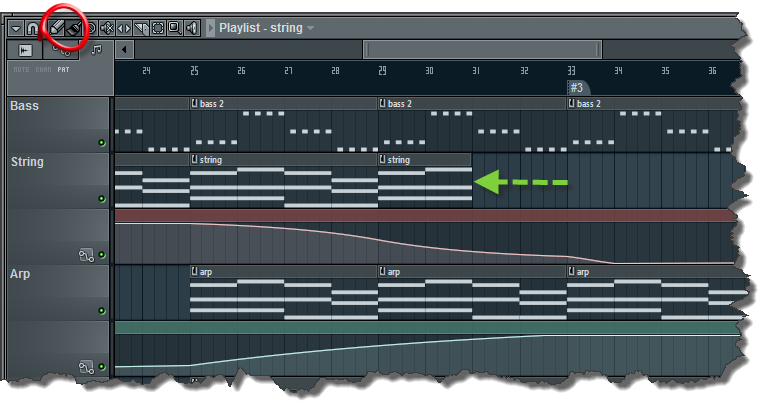
Par exemple ici j'ai réduit la taille de mon clip string (c'est comme ça que l'on nome les instruments a cordes en général), de cette manière il y auras seulement le début du clip qui seras lu.
Vous pouvez également déplacer les notes de votre clip redimensionné pour ne lire que la fin en utilisant l'outil adéquat :
C'est peut être plus rapide, l'outil cutter permet de couper un clip en deux :
Enfin, l'outil de sélection est pratique pour pouvoir manipuler plusieurs clip en même temps :
Pour lire le contenu de la playlist, cochez « song » ou bien utilisez le bouton play sur la playlist.
Si vous souhaitez revenir en mode « lecture de pattern », cochez « pat » ou utilisez le bouton de lecture sur le pattern.
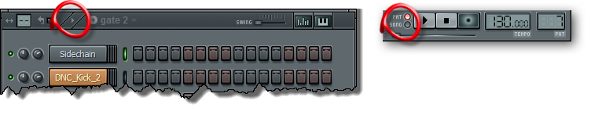
Les éléments audio
Dans la playlist, on peut placer des patterns, comme on vient de le voir, mais aussi ce que l'on appelle des Audio clips.
Tout d'abord il faut que vous fassiez la différence entre un sample et un audio clip.
Les samples sont des échantillons audio de quelques secondes maximum, généralement ce sont des percussions ou des effets. Ils sont contenus dans un sampler :
On y retrouve notamment les onglets « INS » et « FUNC » qui contienne des outils comme l'enveloppe, le LFO ou l'arpégiateur; utile lorsqu'il s'agit du son d'une guitare par exemple. Les sample ne sont pas destiné à être placé directement sur la playlist mais à être joué avec le séquenceur dans un pattern (avec le séquenceur pas à pas ou le piano roll).
Les Audio clips sont, au contraire, plus long; ils contiennent un acapella ou un riff entier. Ils sont destiné à être placé directement sur la playlist car on ne peut pas les jouer note par note comme un sample. On n'utilise plus un sampler mais un audio clip :
C'est presque pareil mais il n'y a pas les onglet « INS » et « FUNC » car ils sont inutiles.
Pour placer un Audio clip dans la playlist, il faut le sélectionner au même endroit que les patterns mais dans la section « Audio clip sources » :
Options d'un clip
Un clip nous offre un certains nombre d'option, quelque soit son type :
On retrouve notamment Preview pour lire le pattern du clip, Edit pattern pour ouvrir directement le Piano roll et Make unique pour cloner le clip.
Les pistes
On peut mettre dans une piste importe quel objet, et on peut y en mettre des différents. Un clic droit sur l'en tête d'une piste à gauche permet d'accéder à un certains nombre d'options, comme par exemple renommer et donner une couleur à celle-ci ou mettre une icone, changer la taille, bloquer le contenu...
Une grande taille pour les clips audio permets de mieux les aligner.
Les marqueurs
Vous pouvez ajouter des marqueurs par un clic droit sur la barre temporelle :
Choisissez « Add marker », à sa création vous devrez lui saisir un nom. Un clic droit sur ce marqueur permet d'accéder à diverse options comme le supprimer, le renommer, déplacer son contenu vers le marqueur précédent ou suivant ou alors lui définir une action :
None : le marqueur n'a aucun effet, il vous permet juste de placer une étiquette;
Loop : le témoins de lecture reviendras sur ce marqueur lorsqu'il atteindras le marqueur suivant;
Skip : le témoins de lecture passe au marqueur suivant;
Pause : met la lecture en pause, sauf si le marqueur précédent est de type Loop;
Song loop : lorsque la lecture est terminé, elle reviendras automatiquement à ce point.
Voilà pour ce qui est de la playlist.
Oh, mais que vois-je au loin ?? La table de mixage ! Passons au prochain chapitre pour la découvrir.
Là, ça commence à devenir un peu plus professionnel. La table de mixage est très utile pour avoir une vue sur l'ensemble des sons joués ainsi que pour placer quelques effets. Comme vous allez le voir, ce n'est pas très compliqué.
Personnellement, je n'aime pas trop ces pistes large; je ne les utiliserais donc pas pour les captures d'écrans.
Router les instruments
On retrouve les voies dans lesquelles on va placer nos instruments (il y en a 99), et un espace à droite pour ajouter des effets. Pour assigner un instrument à une voie, il faut ouvrir cette fenêtre en cliquant sur l'instrument :
Sélectionnez ensuite le numéro de la voie à laquelle vous voulez assigner l'instrument.
Les voies send
Il y a quatre voies un peu spéciales, ce sont les voies « send ». À quoi servent-elles ? Ce n'est pas toujours facile à comprendre, je vais quand même tenter de vous expliquer, mais sachez que j'y reviendrai quand j'aborderai les effets.
Alors pour commencer, assignez un instrument à une piste, j'ai mis la guitare dans la voie 5 par exemple. Sélectionnez cette voie et tournez un des boutons rotatifs situés en bas des voies « send » :
Lisez ensuite le morceau et vous remarquez que l'on a envoyé le son de la piste 5 à la piste « send ». Il est normal que vous n'en voyiez pas l'utilité, mais comme je l'ai dit j'y reviendrai.
Notez que vous pouvez envoyer n'importe quelle piste à une autre, que ce soit une voie de type « send » ou non. Avant de vous montrer comment faire, gardez la piste 5 sélectionnée et observez la piste « Master ».
On envoie chaque piste à la piste « Master ». C'est logique dans le sens où la piste « Master » est « la seule porte de sortie », il n'y a qu'elle qui soit capable d'envoyer les sons à vos haut-parleurs ou à votre casque. Il faut donc lui envoyer chaque piste. J'espère avoir été assez clair.
Donc, pour en revenir à nos moutons, pour envoyer une piste à une autre il faut sélectionner le petit triangle en bas d'une piste, comme sur la capture qui suit :
Un dernier petit truc avant de passer aux effets : la petite disquette située en bas de chaque piste permet de sauvegarder en format wave tout ce qui passe par la voie.
Passons maintenant aux effets, vous pouvez en sélectionner dans les espaces libres à droite des voies :
Comme pour les instruments, ils possèdent pour la plupart des presets. Vous pouvez mettre jusqu'à huit effets par piste. Pour supprimer un effet, remplacez-le par "None".
Paramètres
Pour régler l'intensité de l'effet , utilisez le bouton rotatif à sa droite. Pour le court-circuiter, cliquez sur la lumière verte :
Vous pouvez changer l'ordre des effet en passant par le menu
puis en sélectionnant Move up / Move down ou en utilisant la molette de sa souris sur le nom de l'effet. Les effet serons appliqué dans l'ordre où ils ont été mis dans la table de mixage (l'emplacement 1 seras appliqué en premier, le 2 en second...). C'est à dire que le rendu final ne seras pas le même en fonction du placement de effets.
Pour renommer un effet, faites un clic droit sur son nom.
effets par défaut
Cette section contient un égaliseur paramétrique, les contrôle de la phase, du panoramique, de la largeur stéréo et du délais de compensation.
L'égaliseur paramétrique
Il permet d'atténuer ou d'amplifier certaines fréquences. La glissière verticale permet de régler le niveau, le premier bouton rotatif la fréquence et le deuxième la pente.
Volume et panoramique
La glissière verticale permet de contrôler le volume, le bouton rotatif juste au dessus contrôle la balance. A gauche du bouton de balance, un sélecteur permet d'inverser les canaux gauche et droit. Au dessus du bouton de balance se trouve le bouton de séparation stéréo. En le poussant à gauche vous augmenterez la séparation et à droite vous la diminuerais jusqu’à obtenir un son mono. A gauche de ce bouton se trouve un sélecteur pour inverser la phase. J'en reparlerais.
Le délai de compensation
Certains gros effets peuvent parfois avoir un délais de traitement; pour corriger cela vous avez à disposition une compensation :
En passant le curseur de votre souris sur un effet vous pouvez voir le temps que met le son à le traverser dans la barre d'information en haut à gauche. Vous pouvez entrer manuellement une compensation mais un réglage automatique existe depuis la version 10 :
Utilité des voies send
Vous pouvez maintenant comprendre l'utilité des voies « send ». Imaginez que vous vouliez mettre le même effet à deux instruments situés sur des voies différentes, vous n'avez qu'à envoyer les deux voies sur une piste « send » et mettre l'effet dans la piste « send » en question. Seulement, l'effet agira différemment :
Voici l'exemple d'un effet placé dans une voie normale, l'intégralité du son émis par l'instrument passe dans l'effet. Il en est autrement quand on place un effet dans une voie « send » :
Le son émis par l'instrument va à deux endroits, d'abord directement à la voie master mais également dans l'effet en parallèle. Cela veut dire qu'on entendra le son original puis le traitement de l'effet par dessus. Ce système est très utilisé pour mettre de l'écho ou de la réverbération mais inadapté pour un égaliseur par exemple. Dans ce dernier cas, il faudra couper l'envoi au master des deux instrument et laisser uniquement celui de la voie send. Je vous rappelle que vous pouvez utiliser n'importe quel voie comme une voie send.
Voici la liste exhaustive des effets natifs de FL Studio ainsi que quelques explications. Le but principal est de vous donner un aperçut des fonctionnalités de FL Studio, la plupart de ces effet sont technique et sont expliqué dans des chapitres indépendant, je ne les expliquerais donc pas complètement.
Contrôle de volume
Mute 2
C'est un effet très simple qui permet d'amuïr le coté gauche, droit ou les deux cotés. Il est principalement utilisé avec les automatisations que l'on verras dans le prochain chapitre.
Balance
Encore un effet très simple qui permet de régler le volume et la balance. Il est également très utilisé avec les automatisations.
PanOMatic
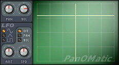
Légèrement plus sophistiqué, cet effet vous permet de contrôler le volume et la balance avec un graphique interactif. PanOMatic est surtout utilisé pour son LFO réglable que l'on peut appliquer sur le volume ou la balance. Vous pouvez régler la forme de la variation du LFO, son impacte (AMT), sa vitesse (SPD) et sa destination (OFF, PAN ou VOL).
Send
Send vous permet d'envoyer le flux audio qui le traverse à une voie send, seulement si des effet sont appliqué sous celui-ci, ils ne serons pas ris en comptes, seul les effet placé au dessus le serons.
Gross Beat
La prononciation pour un francais peut faire rire mais la puissance de cet effet fait honneur à son nom. :D Il permet en effet de jouer littéralement avec le temps en créant des glitchs, des répétition des scratchs ... Il embarque aussi un contrôle d’enveloppe sur le volume que l'on peut aisément dessiner à notre guise. Cet effet est compliqué et long à expliquer, je prévois de lui consacrer un chapitre.
Les filtres
Fast LP
C'est un filtre passe-bas (qui atténue les aigus) très simple et qui utilise peu de ressources. Il est parfaits pour les automatisations. Vous pouvez régler sa fréquence de coupure (Cutoff) et sa résonance.
Free Filter
Ce filtre est très utilisé car il propose des réglages généraux sans fioritures. Vous pouvez choisir son type (j'expliquerais tout les types dans un autres chapitre), sa fréquence de coupure (Freq.), sa résonance (Q) et son gain de sortie.
Filter
C'est en quelques sorte le regroupement de trois types de filtres différent avec une fréquence de coupure et une résonance commune.
Love Philter
C'est le filtre le plus sophistiqué de FL Studio. Il contient 8 banques de filtres. Le signal audio entre dans la section IN à gauche, pour activer le filtre il faut sélectionner ON et ajuster le volume. On entre ensuite dans la section FILTER où l'on doit choisir le type de filtre dans le cadre. Il y a trois réglages communs à tous les types de filtres : la fréquence de coupure, la résonance et l'impacte de l’enveloppe ENV. Cet effet intègre un Enveloppe controler (partie du bas) que j'ai détaillé dans las deuxième partie du tutoriel, chapitre contrôleurs. Le premier bandeau (PAN, VOL, CUT ...) permet d'appliquer une enveloppe à chacuns des paramètres listé. On passe ensuite dans la section Waveshape (WS), c'est une distorsion que l'on applique au signal (voir synthèse waveshaping). Vous pouvez régler sa fonction de transfert dans l'onglet WS de la section enveloppe. Enfin on arrive à la sortie, section OUT où vous avez la possibilité d'envoyer le signal à la prochaine banque de filtre (NEXT). Pour pouvoir utiliser le pad XY de droite, il faut lui assigner de paramètre dans la section enveloppe (choisir un paramètre du premier bandeaux et tracer une courbe dans les onglets MOD X et MOD Y du second bandeau).
Ceci n'est pas une explication complète, il y à quelques autres paramètres que je n'ai pas mentionné mais je ne veux pas allonger le tutoriel surtout que nous ne somme que dans la première partie et qu'il ne devrait pas avoir de concept difficiles. Si vous n'avez pas suivi mes explications vous pouvez toujours utiliser cet effet avec les presets intégrés.
Les égaliseurs
Bass Boost
C'est une simple amplification des basses qui peut être utilisé sur votre grosse caisse (Kick) ou sur votre ligne de bass.
7 Band EQ
C'est un ancien égaliseur, présent dans les premières versions de FL Studio qui a la particularité de consommer très peu de ressources. Il y a 7 fréquence de définies que vous pouvez amplifier ou atténuer.
EQUO
C'est un égaliseur de 31 bandes avec quelques réglages particuliers. vous pouvez directement régler le niveaux des fréquences sur le graphique,la balance et le niveau d'envoi send pour chacune d'entres elles (VOL, PAN et SEND en bas). Sur la partie haute vous pouvez choisir le mode de dessin (à gauche de ANALYSE) pour régler les bandes de manière indépendantes, de façon lié pour faire des trais ou des courbes. Un clic maintenu sur le bouton ANALYSE permet de faire une moyenne de toutes les fréquence et de générer un graphique qui auras tendance à "aplatir" le son. Huit banques sont disponibles pour enregistrer vos graphes (en bas à gauche) et vous pouvez les faire défiler avec le bouton MORPH via une automatisation ou une enveloppe par exemple. Le bouton SHIFT permet de déplacer la courbe horizontalement, également avec une automatisation par exemple. Enfin, vous pouvez router la sortie de l'égaliseur dans une des voies send via la section SETUP.
Parametric EQ
C'est un égaliseur paramétrique 7 bandes avec un usage léger des ressources. Paramétrique veut dire que l'on choisi pour chaque bandes à quel fréquence elle est appliqué (gros bouton roratif). Le petit bouton rotatif sert à régler la pente et la glissière verticale règle le niveau. Les rectangles vert du haut permettent de choisir le type de filtre de chaque bandes (un égaliseur c'est plusieurs filtres).
Parametric EQ 2
C'est le dernier égaliseur de FL Studio. Les réglages sont quasiment identiques que le premier mais on remarque tout de suite son impressionnante vue sur le son qui vous permet de faire des réglages très précis. Attention cet effet utilise beaucoup plus de ressource que l'égaliseur précédent, je vous conseil de ne l'utiliser que lorsque vous avez besoin d'un réglage précis.
C'est un délais simple qui possède trois modes : normal, inversé et ping-pong. Steps définit l'intervalle entre chaque répétions, que vous pouvez synchroniser avec le tempo. Feedback permet de régler le niveaux de bouclage avec un filtre passe-bas pour un effet plus naturel. Cette version est obsolète !
Delay 2
Il s'agit d'une version amélioré du delay avec des contrôles plus fins et quelques fonctions supplémentaires comme le réglage de l'entrée et l'offset sur le retard.
Delay Bank
C'est tout simplement un délai multiple (8 au total). Comme on a déjà vu certains paramètres, je ne les détaillerai pas.
Le signal audio va de gauche (in) à droite (out). Il passe d'abord par un filtre dont on peut régler le type (passez votre souris sur "off" pour le changer) et la pente (1 = 12Db/octaves, 2 = 24Db/octaves et 3 = 36Db/octaves). Le filtre est principalement destiné à séparer les sons en plusieurs parties pour les répartir dans les différents délais. Dans la section feedback, le paramètre sep agit sur la séparation stéréo. On passe à nouveau dans un second filtre. La section grain permet de procéder à une synthèse granulaire. On prélève des petits morceaux de son appelés grains que l'on rejoue avec un retard dans ce cas précis du délai. Le paramètre div agit sur la division des grains et le paramètre sh sur leur forme (leur enveloppe). On arrive enfin à la sortie. Le paramètre next permet d'envoyer le son au prochain délai.
En haut à droite, oversample permet un double traitement du son dans les filtres pour améliorer la qualité. dry c'est le volume général sortant du signal non traité et wet du signal traité. Pour finir avec ce plug-in in est le volume général entrant et fb le feedback général.
C'est un effet de réverbération avec uniquement des réglages généraux. Il est obsolète, je vous conseille donc d'utiliser le deuxième du nom.
Reverb 2
Il est un peu plus évolué que le premier. Il possède une vue interactive sur la forme et la taille du lieu simulé.
Convolver
Cet effet de réverbération est très avancé car il permet d'obtenir exactement la réverbération d'un lieu particulier à partir d'une empreinte que l'on a enregistré, il consomme beaucoup de ressources. Il est expliqué dans le chapitre réverbérations et délais.
Chorus, flanger et phaser
Ces effets sont entièrement expliqué dans ce chapitre.
Chorus
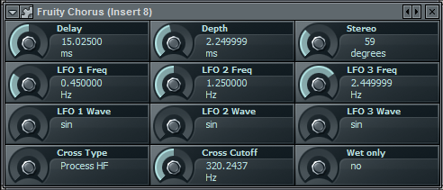
Malgré sont interface épurée, ce chorus possède des réglages avancé. Je ne vais pas expliqué entièrement comment il fonctionne mais sachez qu'il permet de donner l'illusion que plusieurs instrument jouent à partir d'un seul. Il colore également le son, il à l'impression qu'il sonne plus "chaud".
Flanger
C'est un effet similaire au chorus mais avec une sonorité légèrement différente.
Flangus
C'est un flanger avancé.
Phaser
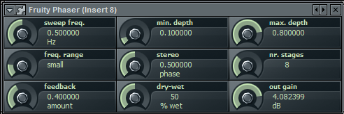
Cet effet est similaire au flanger mais plus prononcé.
C'est un limiteur doux qui consomme peu de ressources.
Compressor
C'est un compresseur un peu plus sophistiqué qui comporte de nombreux paramètres classique. Voir le chapitre dédié pour plus de détails.
Limiter
Il s'agit d'un double compresseur qui possède un limiteur, un compresseur simple et un noise gate. Il a la particularité d'avoir une vue sur le son unique !
Multiband compressor
C'est un compresseur multibandes, c'est à dire qu'il y a trois compresseurs qui travaillent chacun sur une plage de sons (grave, medium et aigus).
Maximus
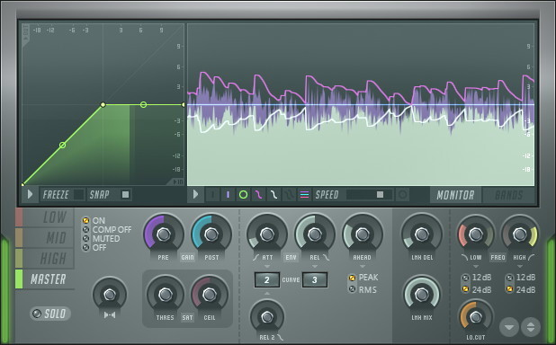
Il combine compresseur, limiteur, noise gate, expandeur, duckeur et de-esseur !
Sondgoodizer
Cet effet est basé sur le moteur audio de Maximus et possède 4 de ses présélections. Le gros bouton permet de régler la quantité de compression.
Les correcteurs de pitch
C'est grâce, ou à cause de plugins comme ceux-ci que n'importe qui peux chanter. En effet il permettent d'accorder le chant à la musique de manière très simple.
Pitcher
C'est un correcteur de pitch en temps réel, vous pouvez même faire des accords via un contrôleur midi !
Newtone
C'est un éditeur avancé pour corriger la tonalité. Vous pouvez faire des découpage, allonger ou raccourcir des "mots" ...
Les vocodeurs
Ils permettent de faire des effets sur la voix en la mélangeant au son d'un synthétiseur. Voir le chapitre vocoding.
Vocoder
C'est un vocoder avancé en temps réel avec une latence nul !
Vocodex
C'est un vocoder très avancé avec un synthétiseur intégré, un contrôle d’enveloppe sur 100 bandes et un soundgoodizer intégré.
Les effets stéréophoniques
Phase Inverter
Ce petit effet permet d'inverser la phase du signal audio pour créer un effet surround. Attention, les signaux peuvent s'annuler surtout si vous reconvertissez les signaux en mono.
Stéréo Enhancer
Cet effet permet de transformer et d'enrichir l'image stéréo. Voir chapitre espace stéréo.
Stéréo Shaper
Avec cet effet vous avez le contrôle du volume et de la phase de chaque coté gauche et droit pour affecter l'image stéréo.
Les visualisations
Big Clock
C'est tout simplement une grosse horloge. :)
db Meter
C'est un afficheur de niveau. Il est très utilisé notamment pour vérifier les niveaux entre deux effets.
Spectroman
C'est un analyseur de spectre simple. Les basses sont à gauche et les aigus à droite.
Wave Candy
Cet effet comprend un oscilloscope, un analyseur de spectre, un spectroscope et un afficheur de niveaux. Tous les affichage (couleurs, reflet, grille ...) sont entièrement personnalisables.
ZGameEditor
C'est un éditeur de visualisations qui répond en fonction de la musique. Vous pouvez aussi automatiser les paramètres.
Les contrôleurs
Ces effets permettent de contrôler un paramètre. Plus de détails dans ce chapitre.
XY Controller
Cet effet vous permet de contrôler deux paramètres avec un joystick.
Peak Controller
Il permet de controller un paramètre en fonction du niveau sonore qui le traverse. Très utilisé pour un effet sidechain très utilisé dans la musique trance et éléctro.
Formula Controller
Cet effet permet de contrôler un paramètre à partir de formules mathématiques.
Autres
Center
Ce petit effet permet de supprimer le décalage DC que peuvent produire certains synthétiseurs.
LSD
Combiné au plugin MIDI OUT, cet effet vous permettras d’accéder aux synthétiseurs intégrés à votre carte son.
NoteBook
Un bloc note très utile pour enregistrer des informations, faire défiler des lyrics en même temps que la musique via automatismes ...
HTML NoteBook
Cet effet vous permet d'ouvrir une page HTML. Attention, il est conseillé de sauvegarder la page au même endroit que votre projet.
Scratcher
Un petit gadget pour scratcher des samples.
Buzz Effect
C'st un émulateur de machines buzz, ce sont des effet simpliste mais fonctionnels.
Edison
C'est l'un des effet les plus puissants de FL Studio, il s'agit d'un éditeur de waves. Je lui consacrerais un chapitre.
Patcher
Et pour terminer voici Patcher ! Il vous permettra de faire des combinaisons d'instruments et d'effets.
Nous voilà dans le dernier chapitre des techniques de base.
Vous avez sûrement déjà fait des projets plus ou moins longs, mais il vous manque un petit quelque chose pour produire un son plus vivant. Ça vous dirait d'automatiser des boutons pour qu'ils tournent d'eux-mêmes ?
On verra plusieurs méthodes différentes pour créer des automatismes.
Tout d'abord, placez-vous dans une piste vide qui sera spécialement prévue pour les automatisations. Choisissez ensuite un paramètre à modifier. Pour savoir si ce paramètre peut être automatisé, placez le curseur de votre souris sur ce paramètre et regardez la barre d'information en haut à gauche.
Si vous voyez le petit cercle rouge, c'est que ce paramètre peut être automatisé. Cliquez ensuite sur le bouton « rec » et choisissez « automation & score ».
Lancez la lecture et modifiez le paramètre. Une fois terminé, décochez le bouton « rec » et relancez la lecture. Voilà, le paramètre bouge tout seul, vous avez réussi votre première automatisation, elle est apparut sur la playlist.
L'automatisation manuelle n'est pas très précise et vous aurez souvent recours à l'éditeur d'événements pour affiner les réglages. Donc, après avoir enregistré une automatisation, faites un clic droit sur le paramètre que vous avez modifié et choisissez « edit events ». Vous obtenez alors quelque chose comme ça :
Comme vous pouvez le constater, ce n'est pas très bien fait, il y a des irrégularités partout. Vous pouvez donc modifier l'automatisation comme bon vous semble avec l'outil pinceau pour dessiner des traits (maintenir le clic droit) ou le dessin libre avec le clic gauche.
Vous retrouvez le même éditeur de LFO que l'on à vu dans le séquenceur ALT + O :
Vous avez deux section, Start et End qui vous permettent de faire des réglages différent entre le début et la fin si vous le souhaitez.
Value : ajoute un niveau constant;
Range : amplitude des formes;
Speed : espacement des formes.
La troisième section vous permet de sélectionner la forme de votre onde (sinusoïde, triangle ou carré) et la phase, c'est le décalage horizontal.
De par son nom, on peut déjà deviner qu'il se placera sur la playlist clip. Pour le créer, choisissez d'abord un paramètre à automatiser puis faites un clic droit et sélectionnez « create automation clip » :
Un nouvel objet apparaît alors dans la playlist clip :
Vous pouvez modifier l'automatisme directement sur la playlist en ajoutant des points avec un clic droit et en les déplaçant avec le clic gauche.
Et là, on ne peut pas faire de LFO ?
Bien sûr que si, cliquez sur le nom de l'automatisation dans le séquenceur et vous aurez un menu permettant de faire des LFO.
Vous l'aurez sûrement remarqué, les plugins que vous téléchargez ne peuvent pas être automatisés. Eh bien, j'ai la solution à ce problème : on va quand même y parvenir.
Ouvrez un plugin téléchargé et allez dans les options, comme sur la capture ci-dessous :
Choisissez ensuite « browse parameters » et vous avez tous les paramètres qui sont apparus dans l'explorateur de gauche. Vous pourrez faire un clic droit sur ces paramètres pour éditer un événement ou pour créer un clip d'automatisation. Formidable, non ?
Vous êtes désormais capables de faire des musiques vivantes grâce à cette technique ! ;)
Dans ce chapitre, je vais revenir sur les termes et les notions techniques que j'ai déjà abordées durant la première partie de ce cours. Il n'est pas indispensable de lire ce chapitre, mais je vous le conseille vivement.
Je les ai évoqués lors du chapitre sur le séquenceur. Quatre temps valent une mesure. En image, ça donne ceci :
Les octaves
Une octave, qu'est-ce que c'est ? C'est l'intervalle qu'il y a entre deux notes identiques. Par exemple entre un do aigu et un do plus grave.
Les décibels
Le décibel est tout simplement l'intensité sonore. C'est une unité de mesure un peu particulière et assez complexe. Pour ceux qui veulent en savoir plus, Wikipédia pourra vous aider. Je vous en montre un extrait pour avoir quelques exemples à titre indicatif :
Citation : Wikipédia
* 0 dB : seuil d'audibilité * De 0 à 10 dB : désert * De 10 à 20 dB : cabine de prise de son * De 20 à 30 dB : conversation à voix basses, chuchotement * De 30 à 40 dB : forêt * De 40 à 50 dB : bibliothèque, lave-vaisselle * De 50 à 60 dB : lave-linge * De 60 à 70 dB : sèche-linge, sonnerie de téléphone, téléviseur, conversation courante * De 70 à 80 dB : aspirateur, restaurant bruyant, passage d'un train à 80 km/h * De 80 à 90 dB : tondeuse à gazon, klaxon de voiture * De 90 à 100 dB : route à circulation dense, tronçonneuse, atelier de forgeage, TGV à 300 km/h à 25 m * De 100 à 110 dB : marteau-piqueur à moins de 5 mètres dans une rue, discothèque * De 110 à 120 dB : tonnerre, atelier de chaudronnerie * De 120 à 130 dB : sirène d'un véhicule de pompier, avion au décollage (à 300 mètres), concert amplifié * 130 dB : seuil de la douleur * De 140 à 150 dB : course de Formule 1, avion au décollage * 170 dB : fusil d'assaut * 180 dB : décollage de la fusée Ariane, lancement d'une roquette * 194 dB : son le plus bruyant possible dans l'air à la pression atmosphérique du niveau de la mer. La différence de pression dans une onde sonore de ce niveau est d'une atmosphère et correspond à l'apparition d'une pression nulle sur le front de dépression de l'onde. Toute onde au-delà de cette frontière ne s'appelle plus onde sonore mais onde de choc.
Au-dessous de 20 dB, le son est pratiquement inaudible pour l'oreille humaine. Il commence à devenir douloureux au-delà de 80 dB, dangereux à partir de 100 dB et insupportable dès 120 dB. Le seuil de douleur n'est bien entendu pas un absolu, il dépend de la fréquence. Le seuil de douleur peut être atteint à un niveau sonore de 110 dB pour une fréquence de 20 000 Hz et à 120 dB pour une fréquence inférieure à 10 000 Hz. Ces valeurs (80 dB, 100 dB, 120 dB) sont les valeurs courantes de la littérature.
Des tests psycho-acoustiques ont montré qu'un dépassement du volume sonore est perceptible par l'oreille humaine à partir de 1 dB et qu'un écart de 10 dB est perçu par l'oreille humaine comme un doublement du volume sonore.
Je m'excuse pour ce copier-coller, mais c'est bien d'avoir quelques exemples pour se faire une idée.
On va étudier l'enveloppe ADSR. Mais déjà qu'est-ce qu’une enveloppe ? Une enveloppe sert à contenir une lettre faire varier la valeur d'un paramètre en fonction du temps. Pour commencer, on va prendre le paramètre du volume. Quand vous appuyez sur une touche de votre clavier, la note met un certain temps à atteindre son volume maximum (parfois instantanée). Si vous ne relâchez pas la note, son volume va redescendre légèrement, mais rester un certain temps constant. Enfin, le volume de la note va redescendre jusqu'à ce que l'on ne l'entende plus. Voila de quoi est constituée l'enveloppe ADSR :
A pour l'attaque, le temps de montée.
D pour le temps de déclins.
S pour le maintient (Sustain).
R pour le temps d'extinction après le relâchement de la touche (Release)
Sous fls, le "TS404" possède un réglage d'enveloppe. vous pouvez visualiser grossièrement son allure réelle avec le "Fruity limiter" :
L'enveloppe peut aussi s'appliquer sur d'autres paramètres que l'amplitude.
Le filtre
Au tour du filtre, maintenant : il enlève une partie des fréquences d'un son. Il prend plusieurs paramètres :
le cutoff ou la fréquence de coupure permet de déterminer à partir de quelles fréquences on commence à filtrer ;
la résonance ;
le type de filtre.
On a les basses fréquences à gauche (graves) et les hautes fréquences à droite (aiguës).
Il existe plusieurs types de filtres.
Lp 12 : low pass 12db/octave ou passe-bas 12 db / octave en français. C'est un filtre qui ne laisse passer que les basses fréquences (graves) et qui a une pente faible de 12 décibels par octave.
Lp 24 : pareil que pour le lp 12, sauf que sa pente est de 24 décibels par octave.
Hp : high-pass, passe-haut en français. Il ne laisse passer que les hautes fréquences.
Bp : band-pass, passe-bande en français. Il ne laisse passer que les fréquences du milieu (médiums).
Et enfin il y a le coupe-bande qui bloque la fréquence du milieu et laisse passer les graves et les aiguës.
Le LFO
Le LFO permet de faire varier un paramètre périodiquement. Un LFO prend comme paramètres :
Une forme d'onde : la forme de la variation;
Une fréquence : la vitesse de la variation;
Une amplitude : l'impacte du LFO.
Voici un exemple, c'est le LFO de Piozone. Tout à gauche on peut choisir à quel paramètre on assigne le LFO, AMOUNT permet de régler l'impacte, RATE la vitesse et SHAPE la forme. Vous avez aussi l'option RETRIG qui redémare le LFO à chaque note et TMP SYNC pour synchroniser le LFO avec le tempo.
Les contrôleurs servent à donner, par exemple, une enveloppe ou un LFO à un paramètre qui en est dépourvu, sans passer par les automatisations. Pour le cas d'une enveloppe, on ne va pas s'amuser à la redessiner vingt fois. De plus, ce serait moins précis que si on passait par un contrôleur.
Nous allons en voir cinq différents : deux qui s'utilisent en tant qu'instruments et trois autres en tant qu'effets. Vous allez voir, ils fonctionnent quasiment de la même manière.
Juste avant de nous lancer dans les contrôleurs, je vais vous présenter le layer, indispensable pour la suite.
Commencez par ouvrir deux instruments différents et le layer depuis le menu channels.
À première vue, on dirait un instrument vide. Ce n'est en fait pas un instrument, mais il va nous permettre d'en relier plusieurs. Passons à la pratique pour bien comprendre.
Sélectionnez vos deux instruments plus le layer à l'aide du clic droit et faites « set children », comme ci-dessous :
Une fois ceci fait, ouvrez le piano roll du layer et placez quelques notes. Lorsque vous mettez en lecture, vous vous apercevez que les deux instruments jouent en même temps.
C'est tout pour le layer, on va pouvoir passer aux contrôleurs.
Vous l'aurez sûrement deviné, il va nous permettre de contrôler l'enveloppe d'un paramètre.
Tout d'abord, ouvrez un layer, un instrument (de préférence synthé comme le 3x osc pour commencer) et Fruity enveloppe contrôleur. Pour l'ouvrir, allez dans l'explorateur puis dans plugins database / generator / contrôleur et faites-le glisser dans le séquenceur. Reliez-les tous les trois avec la méthode décrite un peu plus haut. Faites un clic droit sur le paramètre à modifier (choisissez de préférence un paramètre qui s'entend bien comme la fréquence par exemple) dans le 3x osc et choisissez « link to controller ». Vous tombez sur une fenêtre comme ceci :
Dans « internal controller » (contrôleur interne), prenez « enveloppe contrôleur art 1 », il s'agit de la première enveloppe du plugin. Validez, placez quelques notes dans le layer et observez le paramètre que vous avez lié au contrôleur. Il bouge ! Si vous ouvrez le plugin « enveloppe contrôleur » qu'on a relié au layer, vous vous apercevez que le mouvement du paramètre correspond à la forme de l'enveloppe (que vous pouvez modifier en quelques clics). On se sert du layer pour que l'enveloppe se déclenche en même temps que la note de l'instrument.
Paramètres
Les contrôles
Ce contrôleur contient quatre Articulator. Chacuns étant indépendant et contenant une enveloppe simple (ENV), un LFO, une enveloppe de note (KEY) et une enveloppe de vélocité (VEL). Je détaillerais plus loin. Les trois curseurs à droite permettent de régler respectivement le niveau de la sortie générale, le niveaux de l'enveloppe simple et le niveaux du LFO.
Un sélecteur en dessous de "Articulator" permet de choisir le mode unipolaire ou bipolaire.
En mode bipolaire, les valeurs des enveloppes (ENV, LFO, KEY et VEL) sont additionné;
En mode unipolaire, les valeurs sont multiplié.
Vous devez allouer un plage de notes à chaque "Articulator" via le clavier de droite. Maintenez le clic puis glissez la souris sur le bandeaux gris aux dessus des notes.
L'éditeur d'enveloppes
Pour activer l'enveloppe, il faut cocher la case en bas à gauche.
Ajoutez des points avec un clic gauche sur le graphique. Il existe certains point spéciaux, que l'on nome sections, qui permettent de créer une enveloppe classique ADSR. Avec ces sections, l'enveloppe s'adapteras à la note qui lui est envoyé.
D (DECAY): marque le début de la section de déclin, cette partie s'adapte avec la durée de la note.
S (Sustain): marque le début de la section de relâchement, cette partie est active lorsque la note est relâché.
L (Loop): joue en boucle une partie du Decay.
DL (Decay-Loop): joue entièrement le Decay en boucle.
Vous avez à disposition quatre boutons rotatifs (ATT, DEC, SUS et REl) pour éditer facilement les sections de l'enveloppe. Vous n'êtes pas obligé de placer des sections mais votre enveloppe seras la même quelque soit la durée de la note. Pour supprimer un point, faite un clic droit dessus et sélectionnez Delete ou bien maintenez ALT et faite un clic droit.
Vous pouvez éditer la courbe entre chaque points en déplaçant son centre verticalement, pour une meilleur précision maintenez la touche CTRL. Il existe plusieurs types de courbes et de formes d'ondes, pour en changer cliquez droit sur le point à droite du segment et choisissez parmi les options disponibles.
En bas à droite il y à quatre paramètres :
FREEZE: bloque l'enveloppe pour ne pas la modifier accidentellement;
STEP: permet de dessiner l'enveloppe à main levée, en maintenant CTRL vos dessins prendrons une forme d'escalier;
SNAP: aligne les points sur la grille;
SLIDE: lorsque vous activez cette option, quand vous déplacez un point tous les autres points à sa droite serons déplacé en même temps.
Enfin le menu permet de sauvegarder et d'ouvrir des enveloppes, d'accéder à l'historique d’édition et à quelques autres outils techniques dans la section TOOLS que je ne vais pas détailler.
Création de séquences
Parce que c'est trop banal d'avoir une enveloppe simple, je vais vous montrer comment créer une séquence :
Modifiez la hauteur des barres bleues et observez comment l'enveloppe réagit.
Allez dans les différentes rubriques ou changez la valeur des boutons rotatifs de droite et observez comment change l'enveloppe.
Pour apprécier l'effet d'une séquence, il est préférable d'avoir une note suffisamment longue.
Quelques exemples
Ce chapitre peut vous paraître barbant, mais sachez qu'une simple enveloppe de rien du tout peut vous rapporter des millions et vous garantir un succès planétaire !
Non je ne suis pas fous... J'ai même des exemples ^^
Je vous propose d'essayer cette enveloppe. N'oubliez pas de synchroniser le tempo.
Vous voyez (enfin ... entendez :) ) comment une misérable enveloppe peut devenir un succès planétaire.
Bon un dernier exemple de "trance gate" :
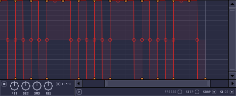
La il faut un peu jouer les les courbes Pulse. Après c'est vous les artistes ! Je vous laisse vous débrouiller, vous savez tout de l'enveloppe contrôleur.
Ce contrôleur a la particularité de pouvoir modifier la valeur d'un paramètre en fonction des notes placées dans le piano roll. Passons à la manipulation pour comprendre. Ouvrez donc un synthé et le contrôleur en question qui se trouvent au même endroit que celui étudié précédemment (cette fois, pas besoin de layer). Assignez ensuite un paramètre au contrôleur en passant par « link to controller » comme on l'a vu plus haut (il y en a deux, choisissez celui où il y a « note » à la fin) :
Ouvrez maintenant la fenêtre du contrôleur :
Tout est dit sur l'image, vous pouvez faire bouger le bouton rotatif en changeant de note. Ça peut être pratique, imaginez que vous voulez qu'un filtre laisse passer uniquement les aiguës quand une note aiguë est jouée et inversement. Tenez, d'ailleurs : pour vous exercer, essayez de le faire. Je vous donne la solution juste après.
Pour le filtre, prenez le « Fruity fast LP », c'est un filtre passe-bas simple. Augmentez la valeur du cutoff pour avoir les aiguës et baissez-le pour n'avoir plus que les basses. C'est tout pour les indications, ce petit exercice vous fera réviser des choses qu'on a vues dans la première partie du cours et que vous devez maîtriser.
Solution
Vous n'en avez normalement pas besoin, mais je vais quand même vous donner la solution.
Commencez par ouvrir un layer, un synthé et le keyboard contrôleur. Le layer permet d'avoir la même note dans le synthé et dans le contrôleur ; si vous avez mis les notes dans le synthé et dans le contrôleur, ça fonctionne aussi, mais je préfère que vous passiez par le layer. Reliez-les donc et assignez le synthé à une voie libre de la table de mixage. Ajoutez ensuite l'effet Fast LP que vous assignerez au contrôleur. Placez quelques notes dans le layer, et abracadabra, ça fonctionne ! o_O
Il y a un autre paramètre de contrôle qui dépend de la vélocitée de la note joué. Même si on ne le voit pas tout de suite, ce contrôleur peut se révéler d'une grande utilité.
Voilà pour ce qui est des contrôleurs qu'on utilise en tant qu'instruments. Il nous reste à voir les trois autres que l'on utilise en tant qu'effets.
Nous allons voir à présent des contrôleurs qui se logent dans la table de mixage, aux emplacement des effets.
Vous pouvez les placer sur n'importe quelle voie, qu'il y ait un instrument ou non. Je vous conseille de garder une voie où vous ne mettrez que les contrôleurs pour mieux les retrouver par la suite. Pour les assigner à un paramètre, c'est exactement de la même façon que les deux qu'on a vus dans la partie précédente.
Ce contrôleur se compose de trois boutons rotatifs (a, b et c) et d'un champ pour entrer des calculs :
Le preset par défaut est simple, la sortie prend la valeur des boutons a + b + c. Il y en a d'autres plus complexes bien sûr, comme des LFO de toutes sortes, des valeurs aléatoires ou encore la valeur de la position de la souris sur l'écran ! :o
Quelques fois, vous devrez mettre la lecture en route pour observer des variations. En effet, certains presets prennent le paramètre « song time » qui correspond à la durée du morceau.
Paramètres
Les boutons a, b et c font office de variable que l'on peu régler de 0 à 1. Pour faire fonctionner ce contrôleur il faut entrer une formule dans le champ FORMULA et appuyer sur entrer ou cliquer sur COMPILE.
Voici la liste des syntaxes et fonctions que ce contrôler prend en charge :
C'est un contrôleur en deux dimensions, une sortie pour les X et une autre pour les Y.
La sortie prend exactement le valeur sur laquelle se situe le cercle. Si on essaye de le bouger, on s'aperçoit qu'il ne répond pas instantanément. On peut régler sa vitesse (SPD) et son accélération (ACC). Sa fonction principale est d'être utilisé avec un joystick ou une manette. Ça peut être bien pour enregistrer des automatisations en live par exemple.
Voilà pour ce contrôleur assez simple. Je ne lui ai pas trouvé une grande utilité si on n'a pas de manette ni de joystick.
On va finir par le plus difficile, le peak contrôleur. Comme il est compliqué à expliquer, je vous propose de faire une manipulation tout de suite puis d'écouter ce qui se passe après.
Commencez par ouvrir n'importe quel instrument, prenez-en un simple comme le 3x osc. Par la suite, on n'entendra même pas le son qu'il fera, ne vous cassez donc pas la tête. Il nous faut ensuite quelque chose qui fasse un son continu tant qu'on joue la note. Pour l'exemple, j'ai pris un violon dans pack / legacy / strings / STR_Mixo_C3. Assignez le 3x osc à une voie libre dans la table de mixage et mettez-lui l'effet peak contrôleur.
Placez ensuite des notes comme sur la capture d'écran :
Peu importe la note, il faut juste que ça ait la même allure.
Assignez ensuite le volume de STR_Mixo_C3 au contrôleur Peak :
Enfin, mettez la lecture en route. On n'entend pas l'instrument très fort. Remarquez qu'on lui a placé une note longue, mais il lit ce qu'il y a dans le 3x osc. C'est ce qu'on appelle un effet « gate » (porte en français, pour ceux qui ne savent pas). Dès qu'on arrive à une note dans le 3x osc, la porte s'ouvre et laisse passer le son du STR_Mixo_c3. Quand il n'y a plus de note, la porte se ferme et le son du Mixo se coupe. Ici, la porte ne s'ouvre pas beaucoup car on n'entend pas très fort, mais j'ai tout un tas de réglages à vous expliquer.
Base : si vous l'augmentez, la porte ne se fermera pas complètement.
Vol et Tns contrôlent tous les deux l'ouverture de la porte. Augmentez-les pour que la porte s'ouvre plus.
Dec : volume de retenue. Si vous l'augmentez, la porte ne se fermera pas tout de suite.
Spd pour le LFO : contrôle la vitesse du LFO.
Ce contrôleur offre trois sorties :
une pour le peak, comme on vient de le voir ;
une pour le LFO ;
et une pour le peak + le LFO (essayez-le pour voir comment il fonctionne réellement).
Personnellement, j'utilise souvent mon joystick pour enregistrer mes automatisations, c'est très précis et j'ai rarement besoin de faire des retouches dans l'éditeur d'événements.
Voilà, c'est fini pour les contrôleurs. N'hésitez pas à vous en servir, ça rend toujours bien dans une composition. ;)
Dans ce chapitre, nous allons étudier le routage du signal audio, c'est-à-dire le trajet qu'il emprunte jusqu'à vos haut-parleurs. Les applications sont diverses :
On va tout d'abord configurer le pilote ASIO4ALL que je vous avais recommandé d'utiliser au début de ce tuto. Sous FLS, allez dans option/audio settings et cliquez sur « Show ASIO pannel » :
Le contenu peut varier selon votre carte son.
Je vous propose de jeter un œil sur les E/S (entrées/sorties) :
8 sorties mono (= 4 sorties stéréo) ;
3 entrées ;
une sortie SPDIF (numérique) ;
et d'autres entrées.
Activez les E/S que vous utiliserez pour FLS et validez.
Trajet audio
Parce que c'est important de savoir d'où vient le son et où il va pour bien comprendre la suite, je vous ai fait un petit schéma :
Dans la première partie, je vous avais dit que la voie master de la table de mixage était la seule à pouvoir passer le signal audio à votre carte son. Ce n'est pas tout à fait exact car je m'apprête à vous montrer comment faire de même avec toutes les autres voies.
Commencez par ouvrir la table de mixage, sélectionnez la voie master et regardez en bas à droite :
Dans le cadre OUT, vous retrouvez votre sortie. Vous pouvez changer de sortie si vous en avez activé plusieurs dans ASIO4ALL.
Si vous allez voir dans une autre voie, vous verrez qu'il n'y a pas de sortie assignée par défaut. C'est évident, puisque toutes les voies sont envoyées à la voie master. Vous pouvez tout de même assigner une sortie à cette voie ; dans ce cas pensez à supprimer l'envoi sur la voie master.
Bien organiser la table de mixage
Pour éviter que les signaux audio ne sortent de partout et qu'on ne s'y retrouve plus, je vous conseille d'avoir un minimum d'organisation. Je vais vous en montrer une, mais c'est juste un conseil, vous faites comme vous voulez.
Le but est simple : on va créer des voies master, une pour chaque sortie :
Vous l'aurez compris, sur la capture, j'exploite mon home cinéma. C'est une des applications possibles.
Ensuite je n'ai plus qu'à envoyer ma voie lead devant, la voie sendreverb à l'arrière pour avoir un effet sympa et ainsi de suite pour le reste.
Les entrées sont très similaires aux sorties. Pour les assigner, c'est en haut à droite :
En général on met un micro ou une entrée ligne.
Dans la table de mixage, l'entrée est au-dessus des effets. Cela veut dire que les signaux sonores provenant de l'entrée passeront dans les effets. En parlant d'effets, l'entrée est utilisée principalement avec l'effet « edison ». Cela va nous permettre d'enregistrer :
Pour enregistrer, il faut tout simplement cliquer sur le bouton rec d'« edison ». L'enregistrement pourra ensuite être placé sur la playlist.
« Edison » est très puissant, je lui consacrerai un chapitre pour expliquer toutes ses fonctionnalités.
Le plus compliqué dans le routage audio, c'est l'organisation et l'envoi des voies. Je vous ai montré une organisation possible mais la meilleure, c'est la vôtre ! C'est celle avec laquelle vous y arrivez le mieux.
Il se pourrait que vous ne vouliez parfois pas créer une musique entière, mais juste en modifier une déjà existante. C'est pour cette raison que je vais aborder l'importation de sons et comment travailler avec. Nous allons d'abord utiliser un effet qui se nomme « edison ». C'est en quelque sorte un mini audacity intégré à FLS. Nous verrons ensuite comment, à partir d'un chant que vous avez enregistré, créer un effet vocoder. Ce sont les voix un peu bizarres qu'on peut entendre dans certaines musiques électroniques.
Commencez par créer un projet vide de préférence, et ouvrez edison dans une voie libre de la table de mixage. Importez une musique par exemple avec Ctrl + O :
Votre musique apparaît alors sous forme d'onde. Pour pouvoir l'exploiter, il faut se caler à la même vitesse qu'elle, sinon ça ne sera pas joli à entendre. Pour ce faire, cliquez sur le bouton « ABC » et choisissez « detect beat » :
Zoomez un peu pour voir le résultat (PGUP sur le clavier au-dessus ou à côté du pavé numérique). Parcourez un peu la musique et vérifiez que les barres sont bien calées avec le tempo :
Par exemple, ici on voit très clairement que les barres sont bien calées.
Notez le tempo qui se trouve juste en dessous du bouton « ABC », qui est de 142BPM pour mon exemple. Insérez maintenant la musique dans la playlist clip avec Shift + C. Reportez ensuite le BPM pour que FLS soit à la même vitesse que la musique et essayez d'aligner les barres de cette musique avec les barres de la playlist (changez la valeur de la grille pour plus de précision) :
Votre musique est maintenant calée, il ne reste plus qu'à ajouter des percussions, un synthé dans les moments calmes, ou ce que vous voulez. ^^
Je vais maintenant vous montrer comment enregistrer des sons dans « edison ». Cliquez sur le bouton « Rec », comme pour enregistrer une automatisation, mais choisissez « Audio into the Edison audio editor/recorder » :
Choisissez ensuite votre source d'entrée (votre micro si vous décidez de chanter) :
Vous pouvez ensuite chanter pendant que la musique joue. Une fois que vous aurez fini, normalisez votre chant avec Ctrl + N, ça ajuste automatiquement le volume. Vous pouvez ensuite exporter votre chant dans la playlist avec Shift + C.
Ah, je vois : vous ne voulez pas chanter parce que vous n'aimez pas votre voix. Ne vous en faites pas, j'ai la solution à tout ! Je vais vous montrer comment ménager le son d'un synthé avec votre voix. Soyez attentifs, car la procédure est complexe.
Première méthode : vocoder simple
On va simplement rajouter l'effet à l'aide de la table de mixage. Une fois votre voix enregistrée, assignez-la à une voie libre de la table de mixage et ouvrez l'effet vocodex.
C'est un effet très puissant doté de nombreux réglages. Vous pouvez l'utiliser tel quel, mais sachez qu'avec, on peut mélanger le son d'un synthétiseur avec votre voix.
Deuxième méthode : vocoder + synthé
Cette fois-ci, assignez votre voix à une voie libre de la table de mixage, mais n'y mettez pas l'effet vocodex. Choisissez un synthétiseur qui fait des notes longues tant qu'on ne les relâche pas (SimSynth par exemple). Assignez-le à une voie libre de la table de mixage et mettez-lui l'effet vocodex.
On va maintenant envoyer la voie de votre chant à la voie du synthé.
Placez-vous ensuite dans un autre pattern et placez une ou deux notes dans le synthé. Dernière étape : placez votre voix et le synthé dans la playlist et lancez la lecture.
L'effet obtenu devrait être médiocre, mais en ajustant quelques réglages, ça va bien rendre.
Pour commencer, augmentez les valeurs des paramètres encadrés :
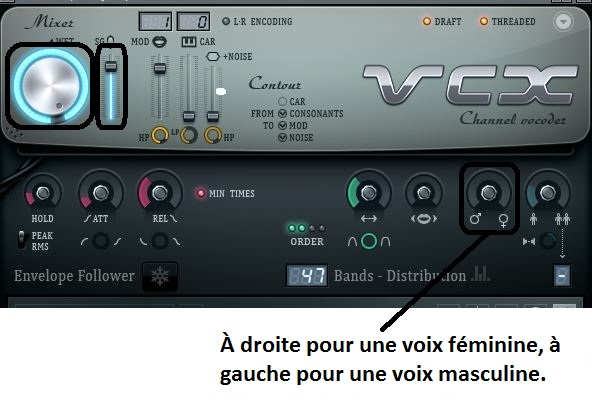
Diminuez ensuite l'envoi de la voix sur le synthé. Cela agit sur le mélange synthé / voix. Diminuez également le volume de la voix elle-même. On devrait déjà avoir quelque chose de bien, là. Pour avoir un rendu impeccable, placez dans le synthé les notes correspondant à votre chant. Le synthé sera alors en accord et vous aurez une qualité professionnelle.
Vous ne reconnaissez plus votre voix, hein ? :)
On a fini avec le travail des sons. Vous n'êtes bien sûr pas obligés de retravailler vos sons avec edison, vous pouvez le faire avec audacity et les importer ensuite directement dans la playlist.
Pour faire une musique, j'hésite toujours entre FLS et Reason, qui est un autre logiciel de MAO. Le problème avec Reason, c'est que son séquenceur n'est pas pratique à utiliser, même insupportable si je ne m'abuse ! En effet, il est principalement destiné à être utilisé avec un clavier MIDI. C'est une sorte de piano qu'on branche à l'ordinateur. Mais vous devez le savoir maintenant, je trouve toujours une solution. :D On va faire ce qu'on appelle un rewire qui va relier FLS et Reason. Ça va nous permettre d'utiliser le séquenceur de FLS et les instruments de Reason.
Je ne vais pas vous faire un tutoriel dessus (peut-être une autre fois... ;) ), mais simplement vous le présenter succinctement.
Comme je le disais, Reason est un logiciel de MAO lui aussi payant, mais il possède une version de démo comme FLS. Téléchargez la démo de Reason et installez-la comme tout autre programme.
La particularité de Reason, c'est que sa présentation est sous forme de rack (instruments et effets compris) et que vous pouvez faire le branchement vous-mêmes en retournant le rack avec la touche Tab.
Cliquez pour agrandir.
Placer des instruments
Faites d'abord un nouveau projet (Ctrl + N) et fermez l'ancien. Pour placer un instrument, faites un clic droit dans le vide puis sélectionnez-en un :
Tables de mixage.
Instruments.
Effets.
On ne s'intéressera qu'aux instruments et on ne modifiera aucun branchement.
Je ne vous explique même pas comment placer des notes tellement c'est compliqué et mal fait. On n'en aura de toute façon pas besoin vu qu'on les mettra directement dans FLS.
Fermez Reason et ouvrez FLS (l'ordre d'ouverture des logiciels est important). Dans FLS, ajoutez le module « rewired » depuis le menu « channels » :
Prenez le client Reason et faites « show panel » pour l'ouvrir en tant qu'esclave rewire.
Dans Reason, créez un nouveau projet et fermez l'ancien, puis ouvrez un instrument. Dans FLS, faites « midi option » situé sous le client que vous avez choisi :
Choisissez votre instrument à droite (attention, ça démarre à 8), ici j'ai pris le SubTractor.
Faites « Add/Change ».
Notez le numéro de channel (ici 8) et de port (ici 0).
Validez.
C'est presque fini, ouvrez « MIDI out » dans FLS par le menu « channels » et reportez les numéros de channel et de port :
Vous pouvez maintenant vous servir du séquenceur pas à pas ou du piano roll.
Si vous voulez utiliser plus de seize instruments, vous devrez choisir « Reason 7 » dans les options MIDI et utiliser un autre port (le 1 par exemple). Vous pouvez utiliser 256 ports différents et 16 instruments par port, soit 4096 instruments provenant du rewire. :-° (Vous devrez également placer d'autres tables de mixages?)
Pour placer un effet sur un instrument dans Reason, vous devrez le brancher vous-mêmes. Commencez déjà par en ouvrir un en maintenant la touche Shift enfoncée pour ne pas le brancher automatiquement. Il faudra ensuite le brancher entre l'instrument et la table de mixage :
Repérez les sorties (out, encadrées en bleu) et les entrées (in, encadrées en rouge). Une sortie va se brancher dans une entrée.
Automatisations
Les automatisations ne changent pas trop par rapport à FLS. Il faut faire un clic droit sur un paramètre et choisir « éditer l'automation », sélectionner l'outil crayon et faire une zone de travail dans le séquenceur en bas :
Prenez ensuite l'outil sélection (curseur à gauche du crayon) et double-cliquez dans la zone de travail. Reprenez le crayon (ce n'est décidément pas très pratique, je vous l'avais dit) et dessinez l'automatisation voulue :
En plus, il ne dessine pas de belles courbes, juste des séries de traits. :colere2:
Si vous êtes comme moi et que vous voulez faire vos automatisations dans FLS, il existe un moyen de lier le bouton rotatif de Reason dans FLS en utilisant « MIDI out ». Prenez le « MIDI out » d'un instrument par exemple, faites un clic droit sur un des boutons rotatifs libres et choisissez « configure » :
Le problème, c'est que je ne connais pas la correspondance des numéros (sauf le 7 pour le volume). Vous pouvez essayer à tâtons pour de petits effets avec peu de paramètres.
J'utilise souvent le rewire car Reason fait des sons beaucoup plus professionnels que FLS. D'autres logiciels peuvent être mis en rewire avec FLS, comme Ableton live ou Rebirth. C'est exactement le même principe que pour Reason.
Je vous propose de créer votre propre synthétiseur. On va utiliser SynthMaker qui est un plugin directement intégré à FLS. Vous pouvez le trouver en passant par le menu « channel » ; s'il ne s'y trouve pas, allez dans « more ». Et si vous ne le trouvez toujours pas, vous pouvez le télécharger à cette adresse. Il est payant, mais vous avez tout de même une version d'évaluation de trente jours.
Vous avez d'autres logiciels gratuits pour créer des synthés (comme Analog Box ou SynthEdit), mais l'avantage de SynthMaker est qu'il est beaucoup plus puissant, et que l'on peut exporter directement son synthé dans FLS une fois celui-ci terminé.
Ouvrez donc SynthMaker, vous devriez avoir ceci à l'écran :
Explorateur.
Vue des différents étages.
Zone de travail.
Pour déplacer la vue de la zone de travail, cliquez sur un des étages et déplacez la souris sans relâcher le bouton.
On peut voir différents éléments ; pour chacun d'eux, on a les entrées à gauche et les sorties à droite. Il y a différents types d'entrée / sortie, et vous ne pouvez pas brancher une sortie qui a une forme de vague à une entrée bleue par exemple. Pour ajouter des éléments, faites-les glisser de l'explorateur de gauche à la zone de travail.
Les présentations sont faites, on va pouvoir passer à la pratique.
Pour commencer, on va monter à l'étage « top » et tout supprimer (clic droit, puis delete) : oui, on part de zéro. :D
On se retrouve donc avec un schéma libre. Pour avoir tous les composants, passez en mode développeur si vous n'y êtes pas déjà (option > developer mode). Dans l'explorateur, allez dans « elements » et placez un module (ou la touche M, c'est plus rapide) :
C'est un composant vide qui nous permettra de faire le design de la face avant de notre synthé. Double-cliquez maintenant sur le module et vous serez dirigés à l'étage en dessous. C'est à cet étage qu'on va réaliser le c?ur de notre synthé.
On va commencer par placer l'entrée et la sortie de notre synthé. Il faut que les notes jouées dans FLS entrent et que le son sorte. Dans l'onglet « FL Studio », placez un « MIDI In » et un « Audio Out » :
Dans l'onglet « MIDI », ajoutez un « MIDI to Poly » et reliez le « MIDI In » à l'entrée de « MIDI to Poly ». L'élément qu'on vient d'ajouter va convertir les signaux MIDI en signaux « Voices ». Avec les signaux « Voices », on va pouvoir ajouter des oscillateurs. C'est ce qu'on va d'ailleurs faire : dans l'onglet « OSC », placez un « Multi Osc » et reliez le « MIDI to Poly » au « Multi Osc », comme ceci :
Dans l'onglet « Modifier », prenez un « combiner » et reliez-lui le « Multi Osc ». Le « combiner » va convertir les signaux « Voices » en signaux audio. Avant de le relier à l'« Audio Out », placez un « Stereo Clip », toujours dans l'onglet « Modifier », et reliez-lui le « combiner ». Reliez enfin le « Stereo Clip » à « Audio Out » :
Si vous retournez dans le séquenceur de FLS pour y mettre quelques notes, vous vous apercevrez que le son obtenu est très désagréable. On va donc placer deux autres oscillateurs, un « Detuner » pour chaque oscillateur et un contrôle de volume « Amp » pour chaque oscillateur également. Pour vous aider, utilisez le champ « Search ». Branchez-les ensuite comme sur la capture ci-dessous :
Le « Detuner » permet de faire deux choses. Il permet tout d'abord d'élever ou d'abaisser les octaves du son demandé. Je vous rappelle qu'une octave correspond à la distance de deux mêmes notes, l'une étant plus aiguë ou plus grave que l'autre. Le « Detuner » permet aussi de faire un déphasage, c'est-à-dire de mettre en avance ou de mettre en retard le signal. Voici une image pour vous expliquer :
On voit que le signal rouge est en retard ou en avance par rapport au bleu, il est déphasé. Le bouton rotatif « Fine » vous permet donc de créer un déphasage. Faites-le un peu comme sur l'exemple plus haut. Au final, le son est plus riche.
On va maintenant mettre une enveloppe. Pour ce faire, allez dans l'onglet « Enveloppe » et choisissez « Multi Stage ». Placez-la entre les trois volumes et le « combiner » :
Vous pouviez aussi prendre le « ADSR » ou un autre, mais le graphique est plus confortable. Au tour du filtre ! Dans l'onglet « Filter », ajoutez le « State Variable » que vous placerez entre les volumes et l'enveloppe :
On peut améliorer l'effet du filtre en plaçant une enveloppe sur son « Cutoff », comme ceci :
Pour en finir avec le c?ur du synthé, on va ajouter quelques effets, vous les trouverez dans l'onglet « Effect ». Regardez bien comment ils se branchent ! Par exemple, le « Parametric EQ » se branche sur des « Voices », on le placera donc entre l'enveloppe et le « combiner ». Pour ce qui est du « Chorus/Flanger », on le placera entre le « combiner » et le « Stereo Clip », car ses branchements sont des signaux audio. Si vous mettez plusieurs effets, branchez-les les uns après les autres. Ajoutez aussi un « Scope » qui se trouve dans « Analysis ». Il est un peu particulier, il a une entrée mais pas de sortie. On va le brancher juste après le « Stereo Clip », comme ceci :
Au final, j'obtiens ça :
Il serait maintenant bien de pouvoir enregistrer des presets comme les vrais synthés. Dans l'onglet « Preset », prenez le « Preset Manager » et placez-le n'importe où sans le brancher (de toute façon, vous ne pouvez pas :p ). Cliquez sur le petit « P » en bas à droite pour entrer quelques paramètres, comme le nombre total de programmes ou encore le nom des programmes :
Maintenant que l'on a placé tous les éléments, on va pouvoir éditer la face avant.
Revenez au premier étage, sur le module vide qu'on a créé au début, et cliquez sur le « G » dans la barre d'action :
L'opération consiste à tout ordonner, parce que là, tout est superposé. Faites en sorte de classer par fonction, par exemple les oscillateurs d'un côté, les effets de l'autre, etc. Cela risque de prendre un peu de temps, mais ne soyez pas pressés, faite un truc bien. Laissez également un peu d'espace entre chaque fonction pour pouvoir mettre des titres après. Faites Ctrl + E pour commencer à déplacer.
Une fois que vous avez tout rangé correctement, on va pouvoir créer des titres. Descendez d'abord à l'étage en dessous puis allez dans l'onglet « Contrôle » et prenez « Group Adornment ». Cliquez sur « P » en bas à droite pour changer de nom, « OSC 1 » par exemple :
Retournez maintenant à l'étage du dessus et placez-le sur la fonction que vous avez choisie :
Répétez l'opération pour toutes les fonctions. Vous pouvez mettre une image de fond : placez le module image à l'étage du dessous puis ouvrez-en une. Elle apparaîtra sur le premier étage.
Votre synthé est maintenant terminé, il ne reste plus qu'à l'exporter en faisant file > export FL plugin. Votre plugin est maintenant disponible dans FLS !
Bien entendu, je n'ai pas tout montré dans SynthMaker tellement il est puissant. Je vous invite à lire son tutoriel.
Dans ce chapitre, nous n'allons pas parler de la compression ayant pour but de réduire la taille d'un fichier audio tel que le mp3.
Nous allons voir comment réduire ou augmenter la plage dynamique, autrement dit la différence de niveau sonore qu'il y a entre les sons les plus bas et les sons les plus hauts.
Sur l'axe horizontal, on a l'entrée ; disons qu'elle varie entre -48 et +20 Db. Sur l'axe vertical, on a la sortie.
J'ai tracé ce que l'on appelle une fonction de transfert. Ici, quand l'entrée varie entre -48 et 0 Db, la sortie suit les même variations. Mais lorsque l'entrée prendra des valeurs supérieures à 0 Db, la sortie va « bloquer » les valeurs à 0 Db.
Dès que l'entrée dépasse un certain seuil, le compresseur se met en marche et compresse le sons pour ne pas qu'il dépasse ce seuil. Cela est un cas particulier du compresseur, on le nomme souvent limiteur.
D'un manière générale, on obtient ceci :
La réduction est moins importante, c'est d'ailleurs l'un des paramètres essentiels du compresseur. À partir d'un certain seuil (threshold en anglais), on divise l'entrée par une valeur (ratio). Sur certains compresseurs, on peut courber la limite de compression (knee). Au lieu de former un angle, on obtient une parabole.
Souvent, on retrouve aussi une enveloppe de type AR (attack release). L'attack permet de retarder la compression de quelques millisecondes. Ainsi, on peut garder la dynamique de certains instruments. En effet, sur ces instrument, les premières millisecondes sont essentielles pour les caractériser. Le release, c'est le temps que met le compresseur à « relâcher » la compression. Cela permet de donner une certaine forme au son.
Toutes les fonctions présentées sont à peu près communes à tous les compresseurs.
C'est le compresseur le plus simple de FLS, seulement deux paramètres :
THRES, pour régler la limite de compression (threshold) ;
POST pour régler le gain et le niveau de compression (ratio).
Le petit graphique de droite est pratique pour observer l'impact des réglages.
Fruity compressor
Ce compresseur est un peu plus avancé que le précédent, mais il reste tout de même simple. Il ne comprend que les réglages basiques. Le type correspond au knee. Hard correspond à un réglage sec et soft à un réglage doux.
Fruity limiter
Ce qui caractérise ce compresseur, c'est sa superbe vue sur le son. On observe ainsi en violet le son original, en vert le son après la compression et en gris quand les deux se superposent. On peut paramétrer l'affichage à l'aide des boutons de gauche. Il fait office de limiteur et de compresseur. On peut changer de fonction en cliquant sur LIMIT ou COMP en bas de la fenêtre.
Partie limiteur
Pour le limiteur, on retrouve des réglages adaptés comme le seuil (ceil), on n'a donc pas besoin de s'embêter avec le threshold et le ratio. Quand on modifie le réglage du seuil, une ligne verte apparaît. Tout se qui passe au-dessus est bloqué. On retrouve le gain et l'enveloppe de type AR (attack telease). On retrouve également quelques nouveaux paramètres :
la fonction curve agit sur l'attack et le release. C'est pour modifier la « brutalité » de l'enveloppe ;
la fonction ahead atténue la compression, c'est un réglage un peu spécial ;
sat permet de saturer légèrement le son au dessus d'un certain seuil, cela apporte de la chaleur au son.
À droite, on a la partie noise gate. Cela permet de supprimer le bruit de fond, lors d'un enregistrement par exemple. Quand vous augmentez le paramètre « thres », une partie marron s'affiche sur le bas de la fenêtre appropriée :
Si le niveau sonore descend dans cette partie, le compresseur coupera le son. Le paramètre gain permet d'agir sur cette coupure. Lorsqu'il est réglé au maximum, il n'y aura aucune coupure. Lorsqu'il est réglé à moitié, le son sera divisé par deux et au minimum le son sera coupé. Enfin le paramètre « Rel », c'est le temps que le compresseur mettra pour relâcher la coupure.
Partie compresseur
Passons à la partie compresseur. Il n'y a pas grand-chose qui change. Le paramètre ceil a laissé place au treshold, au ratio et au knee. Lorsque vous modifierez ces réglages, vous verrez apparaître une série de lignes bleues pour vous faciliter la tâche :
Cela représente la fonction de transfert.
On aperçoit aussi un petit cadre nommé sidechain, on verra à quoi il sert dans le prochain chapitre.
Les compresseurs multibandes sont un peu spéciaux. Ils se composent de plusieurs compresseurs, chacun d'entre eux agit sur une plage de fréquences (grave, médium ou aigu) pour avoir un rendu dynamique.
Fruity multiband compressor
À droite, on retrouve les trois compresseurs avec les réglages principaux. Pour chacun des compresseurs, on dispose d'une visualisation du signal entrant et sortant (il faut cliquer sur le cadre in en dessous) et de compression en rouge. En haut à gauche de chaque compresseur, il y a les lettres A, M et B :
A pour activer le compresseur ;
M pour muter la plage de fréquences concernée ;
B pour court-circuiter le compresseur. Cela désactive le compresseur mais on entend toujours le son de la plage de fréquences concernée.
On peut délimiter la plage de fréquences de chaque compresseur par les quatre boutons rotatifs suivants :
La fréquence correspondante s'affiche dans la barre d'informations.
Maximus
Bon, va falloir s'accrocher. C'est le dernier que je vais vous présenter mais aussi le plus puissant.
Visualisation
C'est presque la même chose que pour le fruity limiter, sauf qu'il y a plusieurs compresseurs :
J'avoue que c'est un peu le boxon, il y en a de partout ! Heureusement, il y a un menu en bas de cette fenêtre pour paramétrer l'affichage. On dispose également d'une visualisation qui ressemble au second égaliseur :
Bref, ils ont mis la dose niveau visualisation.
Compresseurs
Maximus possède quatre compresseurs, trois pour chaque plage de fréquences graves, médiums et aiguës et un dernier pour le master. Non, on ne fait pas les choses à moitié :
Pour chaque compresseur :
on, comp off, muted et off pour mettre en marche le compresseur, l'arrêter ou le muter ;
on a à disposition deux gain. Un premier qui se situe avant le compresseur (pre) et un autre après le compresseur (post) ;
un bouton rotatif pour augmenter ou diminuer la séparation stéréo ;
pour la saturation (sat) on peut régler le treshold et le seuil.
l'enveloppe est similaire au fruity limiter, je ne la redétaillerai donc pas.
Enveloppe
On a aussi à disposition une enveloppe graphique :
On peut ajouter des points, modifier la courbure, mais ce n'est pas tout ! La flèche qui part à droite ouvre un menu où l'on peut enregistrer son enveloppe, en ouvrir d'autres et il y a même un historique. Il y a également plein d'outils, pour modifier cette enveloppe, que je vous laisse découvrir.
Séparation de bandes
Pour finir, on peut régler les plages de fréquences mais aussi la pente des filtres pour la séparation de ces plages :
Pour la pente, on a le choix entre 12 et 24 Db par octave. Pour finir, il y a un filtre passe haut (lo.cut).
De la pratique est nécessaire pour bien comprendre.
Je vous conseille le fruity limiter car il possède une bonne visualisation du son. C'est très pratique quand on débute.
Je vais vous énoncer un problème très connu en musique électronique. Vous avez sûrement dû vous-même vous en rendre compte, la basse et le kick ont beaucoup de mal à cohabiter. Tantôt on entend trop le kick, tantôt on entend trop la basse. J'admets que c'est très agaçant d'être confronté à ce problème quand on débute mais heureusement, on a vite trouvé une solution.
Parce que ce serait trop facile et que ça n'aurait aucun intérêt de consacrer un chapitre entier à cette technique, je ne vais pas tout de suite vous donner la « vraie » solution. Je vous propose d'y réfléchir.
Je vous rappelle la problématique : comment mieux discerner le kick et la basse ?
Si vous essayez ceci, vous entendrez que ça se mélange un peu et le résultat obtenu est peu rythmé.
Ah ! Vous au 3e rang, qu'avez-vous à nous dire ?
Et si on mettait un coup le kick et un coup la basse juste après ?
Hum ! il commence à y avoir de l'idée. C'est en effet une technique de sidechain, un peu bricolée, mais ça fonctionne tout à fait. C'est d'ailleurs cette technique que j'utilise dans quasiment toutes mes compositions car elle est simple et rapide à mettre en œuvre :
Avec l'outil chop, choisissez Off beat 1 et ça placera les notes automatiquement. On entend que le son est beaucoup plus rythmé.
Ce n'est bien sûr pas la seule méthode pour se bricoler un sidechain : on aurait aussi pu utiliser l'effet gross beat comme ceci :
Choisissez le presetSidechain et observez la partie de droite. C'est en quelque sorte une enveloppe du volume, l'effet obtenu est légèrement différent qu'avec la technique de l'Off beat.
Il existe sûrement d'autres techniques mais je ne vais pas toutes les énumérer.
La technique que l'on a vue avant n'est valable que si le kick est placé tout le temps. Dans le cas contraire, il faudrait modifier l'allure de la basse à chaque fois et au final cette technique se révèlerait peu pratique.
Je me permets également de compléter la problématique : il faut que cette technique fonctionne même si à la place du kick, on a une piste vocale par exemple. C'est-à-dire qu'il faut que le volume de la basse baisse si on chante, et qu'il remonte automatiquement si on s'arrête.
Là, ça va être un peu plus compliqué à trouver. :D
On va revenir à l'exemple du kick : il faut que, à chaque fois qu'il y a une note dans le kick, le volume de la basse s'atténue.
Je n'ai pas souligné le mot « note » pour rien, ça devrait vous faire penser à l'effet gate qui, à chaque fois qu'il y a une note, ouvre ou ferme la « porte » du volume. Un contrôleur est présent, pour ce genre d'utilisation c'est le « Peak contrôleur » :
Appliquez-le sur la voie du kick et décochez MUTE en bas à droite pour que l'on puisse l'entendre. Faites ensuite un link to contrôleur sur le volume de la basse et choisissez Peak. N'oubliez pas de faire quelques réglages sur le contrôleur pour que le volume monte suffisamment.
Lorsque vous lancez la lecture, vous vous apercevez que la basse est en même temps que le kick, sauf que c'est l'inverse qu'on veut. :p
Retournez dans la fenêtre « link to contrôleur » de la basse et dans « Mapping formula », choisissez Inverted :
Vous l'aurez compris, ça inverse l'effet du contrôleur.
En passant, allez voir un peu les autres sélections et observez le petit cadre de droite. Vous pouvez aussi créer vos propres sélections grâce à la zone de calcul :
Par exemple sur la capture j'ai créé un Switch inversé.
Pour finir, si vous activez Smoothing, la durée de montée et de descente sera augmentée.
En principe, le sidechain s'utilise avec un compresseur. Le compresseur, souvenez-vous, sert à atténuer les sons qui passeraient au-dessus d'un certain seuil. La technique, c'est de mettre le compresseur sur la basse. Sauf que le calcul du seuil se ferait sur le kick et l'atténuation se ferait sur la basse. Ceci mes amis Zéros, c'est the Sidechain. Ce n'est pas du bricolage comme on l'a fait avant, c'est exactement comme ça que fonctionne le sidechain en réalité. Nous allons enfin voir comment faire un vrai sidechain avec un compresseur. Dans l'exemple qui suit, je vais prendre une basse et un kick. Assignez chacun d'eux à une voie libre de la table de mixage :
Ensuite, placez-vous sur la voie du kick et faite un clic droit à l'endroit où on envoie le kick à la basse :
Choisissez Sidechain to this track. Cela revient à envoyer le kick à la basse en mettant le bouton rotatif à zéro (envoi nul).
Mettez ensuite l'effet Fruity limiter sur la voie de la basse. C'est notre fameux compresseur :
Mettez-le en mode compresseur comme encadré sur la capture. Faites ensuite un clic droit sur le cadre Sidechain et choisissez Kick :
Voilà, le Sidechain est fait. Il ne reste plus qu'à faire quelques réglages sur le compresseur :
De gauche à droite :
GAIN : en quelque sorte le volume ;
THRES (treshold) : seuil de compression. Quand vous le tournerez, cela créera une ligne. Tout ce qui passe au-dessus de cette ligne sera compressé ;
RATIO : réglage du niveau de compression (observez la modification de la ligne) ;
ATT : temps que le compresseur mettra à compresser lorsque le seuil sera dépassé ;
REL : temps que le compresseur mettra pour relâcher la compression.
Les applications de cette technique son très diverses :
avec une basse comme on l'a vu dans ce chapitre ;
animateurs de radio qui parlent au début d'une musique (non ce n'est pas manuel, c'est du sidechain) ;
Le slicing, drôle de nom n'est-ce pas ? Je suis sûr que vous vous demandez ce que c'est. On l'utilise exclusivement pour des drums loops, ce sont des sons de quelques secondes qui contiennent des percussions. Ces sons sont généralement mis en boucle tout le long du morceau, cela évite de se casser la tête à les créer soi-même. Bon, jusque-là, aucun problème. Mais avoir toujours les mêmes percussions tout le long du morceau, ce n'est pas très original. Ce que l'on va faire, c'est découper notre boucle et faire jouer chaque morceau de boucle comme on le veut. Au final, on se retrouve avec tous les composants d'une batterie qui provient de notre boucle, donc au lieu qu'elle se répète tout le temps jusqu'à la fin, on pourra faire quelques modifications de temps en temps.
Le mieux, c'est que l'on utilise la même boucle donc je vous propose de la télécharger, gratuitement bien sûr. Elle provient du site freeloops.com.
On va commencer par le plus basique, ouvrez donc fruity slicer :
Le bouton encadré permet d'ouvrir une boucle, on va donc aller chercher celle que vous avez téléchargée :
Slicer a automatiquement découpé la boucle. On voit sur la barre d'information du plugin la vitesse et la longueur de la boucle.
Le bouton encadré permet de placer les notes correspondantes dans le piano roll. Différentes options sont disponibles : normal, inversé, aléatoire… Le troisième bouton permet d'ouvrir les paramètres de découpe, le mieux c'est de laisser la découpe automatique ; sauf si ça ne va pas bien entendu.
Passons au piano roll :
Comme on le voit sur la capture,il peut y avoir un décalage. On devra donc replacer manuellement les notes, ce n'est pas compliqué : on sélectionne tout avec CRTL + A et on déplace. Bref, le but avec ce plugin, c'est de retoucher les percussions, de les jouer autrement. Par exemple, à un moment donné je veux faire un break dans ma compo :
En quelques clics c'est bon. :D
Cela nous donne une grande liberté, les possibilités sont énormes.
Fruity slicer est bien, il fait ce qu'on lui demande mais rien de plus. Avec Slicex on peut… euh… tout faire. :D
Rien qu'en regardant l'interface, on voit qu'il intègre le plugin enveloppe contrôler et aussi le plugin Edison.
Partie Edison
Bon, passons à la pratique. Ouvrez la boucle avec un simple clic dans la zone de travail d'Edison. Vous pouvez déplacer les marques ou les supprimer si besoin avec un clic droit. En ce qui concerne la partie Edison, les outils sont les mêmes, je ne les redétaillerai donc pas. La seule particularité, c'est que l'on a à disposition deux decks :
Ouvrez dans le second deck une autre boucle. Un peu plus bas, on a quelque chose qui ressemble au séquenceur « pas à pas ». Cela va nous servir à attribuer une plage de notes pour notre boucle. Vous pouvez mettre les deux boucles dans la même plage de notes, mais je vous préviens, ce ne sera pas pratique pour la suite ; à éviter donc. On peut changer la plage de note en cliquant sur les lettres à gauche :
Partie Enveloppe contrôler
Passons maintenant à la partie enveloppe contrôler :
Pour chaque morceau de boucle, vous pouvez appliquer différents paramètres. Et pour chacun de ces paramètres, vous pouvez appliquer une enveloppe. En bref c'est du costaud, le cadre out permet de router chaque morceau de boucle à une voie de la table de mixage. Je ne vais pas non plus trop m'étendre là-dessus, vous devez savoir ce qu'est une enveloppe et vous avez également déjà utilisé un plugin similaire.
Juste une petite précision : pour pouvoir utiliser la modulation XY un peu plus haut, il faut passer dans les onglets MOD X et MOD Y. Par exemple, si je veux mettre le filtre dans les X, je sélectionne l'onglet CUT puis l'onglet MOD X :
Par exemple ici, l'action sur les X sera proportionnelle à l'action sur le paramètre.
Ici, l'action sera inversée.
Piano roll
Après ceci, on va donc s'intéresser au piano roll. Comme il y a deux decks, le placement des notes est un peu différent :
En haut à gauche (dans la case de couleur), on peut choisir pour quel deck on place les notes. On peut même inverser la lecture des notes. Pour le reste, rien ne change.
Slicex est très puissant mais aussi très complexe. Si vous voulez faire simple et rapide, comme dans la plupart des cas, utilisez Fruity slicer. Certes, les fonctions sont minimalistes face à Slicex, mais efficaces. :)
Enfin, l'utilisation de l'outil Claw machine du piano roll permet de créer des rythmes très intéressants.
Ces deux effets permettent de simuler un environnement. En effet, chaque espace n'a pas la même sonorité. Si vous prenez une casserole et que vous tapez dessus avec une cuillère, vous n'entendrez pas la même chose si vous vous trouvez dans votre salle de bain ou dans votre chambre. Cela dépend des matériaux des murs, des objets présents dans la pièce et de beaucoup d'autres choses. Bref ce que l'on veut, c'est reproduire ces sonorités.
Le fonctionnement du délai est simple, on répète le son plusieurs fois après l'original. Le son issu du délai s'atténue petit à petit pour disparaitre.
Comme il n'y a pas grand-chose à comprendre, je vais tout de suite passer à la pratique sous fls.
Fruity delay 2
Je vous présente le Fruity delay 2, je ne vous parlerai pas du premier, car il est obsolète.
À gauche, on peut régler le volume et la balance d'entrée. On arrive ensuite à la section feedback, elle réinjecte le signal de sortie à l'entrée. On peut ensuite choisir entre normal, invert et p. pong :
normal garde le signal stéréo identique à celui d'entrée.
invert inverse le canal gauche et droit.
p. pong (effet ping pong) alterne chaque passage entre côté gauche et côté droit.
Le volume permet de définir l'atténuation, s'il est au maximum le son se répètera à l'infini et à l'inverse s'il est au minimum le son ne se répètera pas. Le paramètre cut est un filtre pour que l'effet soit plus naturel.
Ensuite, on entre dans la section time, le paramètre time permet de définir le délai et le paramètre ofs (offset) permet de mettre un délai plus grand sur le canal gauche ou le canal droit pour créer un environnement stéréo.
Pour finir, le paramètre dry permet d'agir sur le mélange signal original / signal traité.
Fruity delay bank
C'est tout simplement un délai multiple (8 au total). Comme on a déjà vu certains paramètres, je ne les détaillerai pas.
Le signal audio va de gauche (in) à droite (out). Il passe d'abord par un filtre dont on peut régler le type (passez votre souris sur "off" pour le changer) et la pente (1 = 12Db/octaves, 2 = 24Db/octaves et 3 = 36Db/octaves). Le filtre est principalement destiné à séparer les sons en plusieurs parties pour les répartir dans les différents délais. Dans la section feedback, le paramètre sep agit sur la séparation stéréo. On passe à nouveau dans un second filtre. La section grain permet de procéder à une synthèse granulaire. On prélève des petits morceaux de son appelés grains que l'on rejoue avec un retard dans ce cas précis du délai. Le paramètre div agit sur la division des grains et le paramètre sh sur leur forme (leur enveloppe). On arrive enfin à la sortie. Le paramètre next permet d'envoyer le son au prochain délai.
En haut à droite, oversample permet un double traitement du son dans les filtres pour améliorer la qualité. dry c'est le volume général sortant du signal non traité et wet du signal traité. Pour finir avec ce plug-in in est le volume général entrant et fb le feedback général.
La réverbération c'est comme une multitude de délais à des niveaux et des retards différents. On utilise souvent des algorithmes très complexes pour tenter de reproduire un lieu particulier. Elle permet la spatialisation du son, dans un mix elle définit une certaine couleur au son. En général, le nombre de délais est très important. Leur nombre et leur durée dépendent du lieu simulé.
Fruity reverb 2
C'est un plug-in interactif avec son graphique de gauche. Il représente la pièce simulée, on peut modifier la taille et la forme de celle-ci.
Le commutateur mid/side permet de changer la méthode de traitement du signal. Mid convertit d'abord le signal en mono puis le traite et lui donne un effet stéréo. Side garde le signal stéréo original pour le traitement. H.cut et L.cut sont des filtres (passe-bas et passe-haut). Del règle le retard de la première réflexion. Size et Diff agissent sur la taille et la forme de la pièce représentée sur le graphique de gauche. On arrive ensuite à un groupe de quatre paramètres :
Bass : ajout d'un délai supplémentaire pour les basses fréquences.
Dec : délais des réverbérations.
Cross : quantité de basses qui vont bénéficier d'un retard supplémentaire.
Damp : filtre des aigus pour avoir un effet plus naturel.
Dry règle le niveau du signal non traité (original), er de la première réverbération et wet du signal traité. Enfin, le dernier bouton rotatif règle la séparation stéréo.
Fruity convolver
Ce plug-in utilise la méthode de convolution. C'est un nouveau type de réverbération qui a pris beaucoup d'ampleur. Pourquoi tant de popularité, tout simplement parce que cette technologie permet d'imiter à la perfection n'importe quelle salle de concert, église ou tout autre lieu du monde. Le principe est le suivant, on enregistre une empreinte dans un lieu (un coup de feu de pistolet de starter) ensuite on utilise un logiciel de déconvolution qui lui, connaissant le signal qui a été envoyé permet de soustraire le signal original et ainsi d'obtenir la fameuse réverbération. Donc si vous voulez obtenir la réverbération de la basilique Saint-Pierre de Rome, pas besoin de faire le voyage jusqu'en Italie, il suffit de télécharger l'empreinte correspondante. L'avantage c'est que cette méthode offre une qualité exceptionnelle, mais elle est gourmande en ressources.
Pour en revenir au plug-in, l'empreinte est chargée en bas dans la partie "Edison". Vous pouvez bien entendu utiliser tous les outils d'Edison pour modifier l'empreinte. Vous avez à disposition une banque d'empreintes dans le dossier impulse de l'explorateur de gauche. Pour les boutons rotatifs du haut, de gauche à droite :
Dry : niveau du signal original.
In : séparation stéréo du signal original.
Wet : niveau du signal traité.
Second wet : séparation stéréo du signal traité.
Delay : délais de la première réflexion.
Self-conv : c'est comme le feedback, cela réinjecte le signal de sortie à l'entrée.
Stretch : règle la qualité de la réverbération.
Eq : règle le mélange entre le signal ne passant pas dans l'égaliseur et le signal passant dans l'égaliseur.
Vous pouvez modifier l'égaliseur en le sélectionnant à droite de impulse en vert :
Maintenant que vous connaissez tout sur les délais et réverbérations, il s'agit de bien les appliquer et de les doser justement.
Cet effet est très pratique, il donne l'illusion que plusieurs instruments jouent en même temps (bien entendu à partir d'un seul). Le principe est très simple. Imaginez plusieurs violonistes. Même s'ils jouent la même chose, si l'on ferme les yeux on en entendra plusieurs. Pourquoi ? Tout simplement parce qu'ils ne sont pas parfaitement synchronisés. Il y aura toujours un décalage de quelques ms. Notre effet va donc ajouter des retards pour qu'on ait l'impression que plusieurs instruments jouent. Voici un petit schéma pour illustrer ce que je viens de dire :
C'est aussi simple que ça, il n'y a rien d'autre à comprendre.
Pratique
Le chorus natif à fls ne possède pas vraiment d'interface graphique. Pour en avoir un tout beau, vous pouvez le télécharger sur un des nombreux sites de plugins gratuits, les réglages que je présente pour celui-ci sont identiques à tous les chorus :
Delay permet de régler le délai minimum entres les voies. Le délai variera entre la valeur delay et la valeur delay + depth à l'aide d'un LFO. Cette variation est très faible pour ne pas trop modifier le son (et pour ne pas confondre avec le flanger que l'on verra juste après).
Stéréo permet de régler la largeur de l'image stéréo.
On a à disposition trois LFO dont on peut régler la fréquence (freq) et la forme d'onde (wave).
Les paramètres cross sont en relation avec un filtre pour ne travailler que sur les graves ou les aigus. Le paramètre cross type permet de définir sur quelle fréquence on applique l'effet (HF pour les aigus et LF pour les graves) et le paramètre cross cutoff définit la fréquence de coupure.
Wet only permet de définir en quel mode fonctionne l'effet. Si votre effet est dans une voie send, on enlèvera le signal original et on ne gardera que le signal traité (yes). Si au contraire il est dans une voie insert, on gardera le signal original et le signal traité (no).
Le Flanger est similaire au Chorus. Il n'y a qu'un retard, mais il est variable. C'est-à-dire qu'on lui ajoute un LFO. De plus, le retard est généralement moins important que le chorus :
Le son obtenu me fait penser à un réacteur d'avion ! Il est souvent utilisé pour les guitares. Cet effet déforme le son et cette déformation vient du retard variable. Pour vous expliquer, je vais prendre un signal simple :
Le signal original est en haut et le signal retardé est en bas.
À cet instant, le signal original est exactement l'opposé du signal retardé. On obtient donc le signal de droite c'est-à-dire aucun son.
Mais au même moment, à une fréquence plus élevée, les deux signaux n'ont pas la même position :
Il se trouve qu'au moment où les signaux de faibles fréquences s'annulent, les signaux de hautes fréquences s'additionnent. Regardez, même si le signal s'est déplacé une bosse se trouve quasiment en face d'une autre bosse, pareil pour les creux. On entend donc les aigus plus fort que les graves, mais comme le retard est variable, la position des signaux change. Il se peut donc qu'après ce soit l'inverse, les graves se trouvent amplifiés et les aigus s'annulent.
Voilà donc d'où vient cette déformation du son.
Pratique
Les paramètres delay et depth fonctionnent comme le chorus.
Rate règle la fréquence du LFO.
Phase sert à régler l'image stéréo.
damp filtre les hautes fréquences.
Shape sert à régler la forme d'onde entre sinus et triangle.
feed sert à réinjecter le signal sortant à l'entrée.
invert feedback et invert wet changent le timbre sonore.
Les trois derniers paramètres sont d'autres effets pour modifier le son.
Le phaser est tout simplement un « multi-flanger », au lieu de n'avoir qu'un seul retard variable il en a plusieurs (quatre généralement):
Le Feedback réinjecte le signal de sortie à l'entrée. Quelques fois, le Flanger en est également doté.
Il y a une chose que je n'ai pas représentée sur le schéma. Avant de passer dans les retards variables, le signal d'entrée est séparé en 4 avec des filtres. Ensuite, chaque partie du signal va dans un retard variable. Ces parties de signal sont appelées « Crans ».
Pratique
sweep freq. règle la fréquence du LFO. Cette fréquence est modifiée par le paramètre freq. range, de 0 à 10Hz pour large et de 0 à 2Hz pour small. En gros, la variation est variable. :D
nr. stages définit le nombre de crans.
dry-wet c'est le mélange entre le signal traité et le signal non traité.
Enfin, out gain permet de rehausser le volume de sortie.
Les plug-ins natifs de fls sont assez repoussants, car leur interface est très minime et les paramètres sont complexes.
Pour avoir de belles interfaces, rien ne vous empêche d'en télécharger d'autres.
Dans votre composition, vous serez obligatoirement amenés à mettre en place des effets de stéréo pour que certains instruments prennent plus d'ampleur.
Tout d'abord, il faut savoir ce qu'est la stéréo. Un son stéréo possède obligatoirement deux canaux (canal gauche et canal droit). Un son qui ne possède qu'un seul canal est obligatoirement mono. Sauf qu'un son à deux canaux peut aussi être mono. Comment est-ce possible ? Comme je l'ai dit, un son stéréo possède deux canaux, mais pas seulement, il faut aussi qu'il y ait une différence entre ces deux canaux. S'il n'y a aucune différence, le son est mono.
1 canal : mono
2 canaux identiques : mono
2 canaux différents : stéréo
Il existe trois types de différences possibles pour créer un son stéréo :
Comment faire pour créer une différence de volume entre la gauche et la droite ?
Facile me direz-vous, il suffit de tourner le bouton de balance !
Oui, mais encore faut-il savoir comment il fonctionne, je vais donc commencer par vous l'expliquer.
La balance
Sous fls, on a à disposition deux boutons de balance en général. Un premier qui se situe sur l'instrument :
Et un autre sur la table de mixage :
La seule différence entre les deux c'est que celui sur l'instrument agira avant les effets et celui sur la table de mixage après. On obtiendra donc un rendu différent.
J'en reviens à l'action de ce bouton, il déplace le son à droite ou à gauche. C'est-à-dire que si on le tourne à gauche, on entendra du côté gauche les sons des deux côtés. Autrement dit, il ne coupe pas le côté droit.
Pour que l'on puisse entendre à gauche seulement le côté gauche et rien à droite, il faut utiliser un effet.
Fruity stereo shaper
On va donc utiliser fruity stereo shaper :
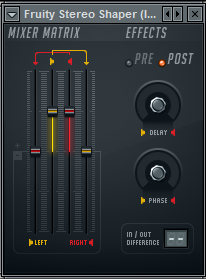
On observe quatre curseurs. Les deux curseurs levés représentent les volumes des canaux gauches (jaune) et droits (rouge). Si on baisse le canal droit à zéro, on entendra à gauche seulement les sons venant du canal gauche à l'origine et non le son des canaux gauche et droit.
Il reste aussi deux autres curseurs, un à chaque extrémité. Si vous augmentez celui tout à droite, le son du canal gauche sera envoyé au canal droit (un petit graphique est présent en haut des curseurs pour s'en rappeler).
On peut donc avec cet effet s'amuser avec les différents niveaux sonores de chaque canal.
C'est la méthode la plus simple à comprendre, on va simplement appliquer un léger retard sur l'un des deux côtés.
On a pour cela deux effets à disposition.
Je vais commencer par le fruity stereo shaper car on vient de le voir, il suffit simplement de tourner le bouton rotatif Delay :
Si vous le tournez à droite, un retard sera appliqué à droite et inversement pour la gauche. On a ainsi l'impression que le son s'écarte.
On a aussi à disposition fruity stereo enhancer :
Stéréo Sep : permet d'augmenter ou de diminuer la séparation. Ne fonctionne pas sur les signaux mono car il ne fait qu'augmenter la différence entre la gauche et la droite pour avoir un effet de séparation.
PRE/POST : permet de définir si l'offset sera appliqué avant ou après les autres effets de ce plug-in.
Phase offset : définit le retard sur la droite ou la gauche
Invert : permet d'inverser les phases de gauche ou de droite.
Pan : correspond à la balance
Vol : volume ^^
Bon je n'ai rien d'autre à ajouter, passons à la suite.
Il existe une dernière méthode pour créer un effet stéréo. Il faut une différence de timbre de chaque côté. Pour cela, on va utiliser un égaliseur stéréo. C'est un double égaliseur qui a une partie pour régler la gauche et une autre pour régler la droite. On peut ainsi obtenir un effet stéréo en réglant différemment la gauche de la droite.
FL Studio ne possède pas d'égaliseur stéréo nativement. Je vous propose donc de télécharger celui-ci gratuitement :
INPUT pour régler le niveau sonore d'entrée (un curseur pour la gauche et un autre pour la droite).
LEFT EQ et RIGHT EQ sont les deux égaliseurs, un pour la gauche et un autre pour la droite.
OUTPUT pour régler le niveau sonore de sortie.
Il faut décocher LINK pour faire un réglage différent à gauche et à droite.
Je vous en présente un autre légèrement plus complet que vous pouvez télécharger ici :
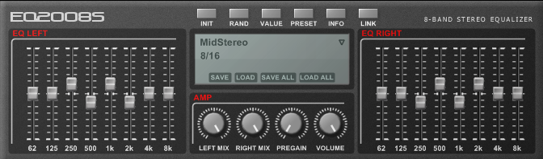
Ce qu'il possède :
Une bande de plus que le précédent.
Des presets pertinents.
Un réglage du mélange "signal traité/non traité" pour chaque côté.
Ça y est ! Vous venez de créer votre première musique. Après tant d'efforts vous voulez vous reposer et envoyer à tous vos contacts le fruit de votre travail. :D
Attendez, pas si vite... ^^
Contrairement à ce que vous pouvez penser, ce n'est pas encore terminé. Dans quelques instants, on va entrer dans l'une des parties les plus longues. Cela consiste à finaliser votre musique. En effet si vous écoutez une vraie musique et votre composition juste après, vous vous apercevrez que ça ne sonne pas pareil.
C'est pour cela que je vous invite à lire ce chapitre. À l'issue de celui-ci, on pourra faire la différence entre un compositeur du dimanche et un vrai pro.
Tout d'abord, il faut faire la différence entre mixage et mastering :
Le mixage ou « mix » c'est l'application d'effet sur chaque instrument de façon individuelle.
Le mastering c'est la même chose, mais sur l'ensemble du morceau. L'application d'effets sur la piste master par exemple.
Comme je l'ai dit, cette partie est très longue. Il ne faut pas avoir peur d'y passer plusieurs heures voire plusieurs dizaines d'heures !
Première consigne : bien qu'il faille y passer beaucoup de temps, cela ne veut pas dire qu'il faut tout faire en une seule fois, ni deux d'ailleurs, je dirais cinq, six fois ou plus selon la complexité de votre morceau.
Pourquoi ? Tout simplement parce que votre oreille se fatiguera, de même que tout votre corps en général selon que vous ferez votre mix le matin, l'après-midi ou le soir. D'ailleurs, si vous pouviez alterner ce serait l'idéal.
Dans les studios d'enregistrement, pour faire le mix on utilise des hauts parleurs haut de gamme avec une réponse en fréquence très linéaire. C'est-à-dire que toutes les fréquences (des graves aux aiguës) sont reproduites avec le même niveau sonore. Ce sont des haut-parleurs très haut de gamme qui coûtent extrêmement cher.
Je vais donc supposer que vous n'en êtes pas équipés, ce qui va m'amener à vous donner une autre consigne : si vous avez un bon casque, utilisez-le. Si vous n'avez que des écouteurs et une chaine hi-fi (branchés au PC si possible), eh bien on va faire avec. :D Le but sera d'alterner entre les écouteurs et la chaine hi-fi.
Bon je pense que c'est bon, on va pouvoir y aller.
Une dernière chose, n'ayez pas peur de lire votre composition des dizaines voire des centaines de fois pour les plus maniaques. Surtout, ne vous découragez pas et prenez votre temps.
Ici, on va faire de la modélisation spectrale. L'objectif est de pouvoir bien discerner chaque instrument. Si vous lancez la lecture de votre morceau, vous entendrez sûrement que vos instruments sont « les uns par-dessus les autres ». On va donc les séparer avec des égaliseurs.
Pour illustrer cette technique, imaginez un péage d'autoroute. Chaque voie représente une fréquence (de grave à aiguë) et toutes les voitures font la queue sur les voies du milieu. Ceci est bien entendu à éviter, on va dire aux voitures de prendre toute la place disponible.
Fruity loops possède nativement deux égaliseurs :
Mais aussi un plus puissant :
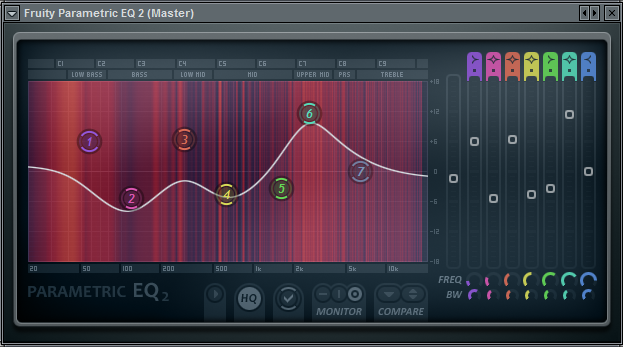
Sachant qu'il va falloir en placer un par canal je vous conseille d'utiliser le premier malgré que le second ait une superbe vue sur le son.
Pourquoi ? Pour ne pas faire la même erreur que moi. Quand le second est sorti, je me suis dit : « Trop puissant ! Je vais en mettre partout !". Et ce qui devait arriver arriva, tous mes afficheurs ainsi que toutes les commandes se sont mis à ramer... Bref, les qualités du second ne servaient plus à rien. J’utilise tout de même le second pour le mastering, mais j'en parlerai après.
Fonctionnement de l'égaliseur
Tout d'abord, il y a les curseurs linéaires qui permettent d'augmenter ou d'atténuer les fréquences. Ces fréquences on peut les choisir avec les gros boutons rotatifs situés juste en dessous. La valeur de la fréquence est marquée dans le petit cadre vert. Les plus petits boutons rotatifs permettent de définir le facteur de qualité de chaque filtre (un égaliseur c'est plusieurs filtres). Autrement dit la pente. Faites des tests pour bien observer le phénomène.
Cette méthode est applicable à tous les plug-ins natifs de Fl studio.
Bon, je n'en ai pas fini avec l'égaliseur, il me reste à vous montrer les types de filtres :
: passe-bas, il ne laisse passer que les basses fréquences.
: passe-haut, il ne laisse passer que les hautes fréquences.
: passe-bande, il ne laisse passer qu'une fréquence centrale.
: coupe-bande, à l'inverse du passe-bande il atténue une fréquence centrale.
: low shelf, augmente ou atténue de façon égale toutes les fréquences en dessous de la valeur choisie.
: hight shelf, identique au précédent, mais agit sur les hautes fréquences.
: peaking, augmente ou atténue la fréquence choisie.
Séparer les instruments
La première chose à faire c'est de mettre des passe-haut et des passe-bas à tous vos instruments. Je vais vous expliquer pourquoi, c'est très simple.
Chaque instrument possède des fréquences que je qualifierai d'essentielles, propres à chacun d'entre eux. Mais ils possèdent également des fréquences secondaires qui ne sont utiles que si l'instrument est joué seul pour donner plus de richesse au son. Lorsque l'instrument est joué dans un ensemble, ces fréquences ne sont plus perceptibles. Au final, toutes les fréquences secondaires de chaque instrument vont venir encombrer notre morceau. Souvenez vous l'exemple avec les voies d'un péage d'autoroute, les fréquences secondaires prennent la place d'autres instruments.
Appliquons donc des passe-haut et des passe-bas :
Dans cet exemple j'ai appliqué un passe-haut à 80Hz, c'est tout ce qu'il y a de plus normal. En général on applique un passe-haut à 80 ou 90 Hz. J'ai également appliqué un passe-bas à 14KHz environ (14493Hz). C'est très haut, cet instrument sonnait dans les aigus.
Bon je vais vous donner un autre exemple pour bien comprendre :
Ici le passe-haut est à 80Hz aussi. Le passe bas est 12KHz environ (11539Hz).
Vous l'aurez sûrement compris, faudra ajuster l'EQ (égaliseur) selon l'instrument et sa sonorité.
Pour vous aider, utilisez l'EQ2, mais je vous conseille de l'utiliser uniquement pour visualiser les fréquences. Pour ne pas faire la même erreur que moi, enlevez-le après vos manipulations. Vos avez aussi « Spectroman » pour visualiser les fréquences.
Après avoir appliqué les passe-haut et passe-bas, nous allons voir comment séparer les instruments.
Comment fait-on ? Je vous propose de remonter et de regarder les EQ de mes deux exemples, notamment à 1203Hz et 3KHz. Sur le premier je l'ai augmenté et sur le second je l'ai atténué. De cette façon, on peut bien faire la différence entre les deux instruments.
Ceci est très utile si un groupe d'instrument joue dans les mêmes fréquences. Augmentez de quelques Db certaines fréquences, diminuez en d'autres, jouez sur la pente et ainsi de suite ... Le but est de bien discerner chaque instrument, mais aussi d'utiliser toute la plage de fréquences, il ne faut pas qu'il y ait un trou dans les aigus par exemple. N'hésitez pas à utiliser des visualisations telles que « spectroman » pour vous aider.
Ici, je vois qu'il faut atténuer les pics et augmenter les creux, mais sur un autre instrument. Par exemple, un creux sur cet instrument veut dire qu'il y a de la place pour qu'un autre instrument vienne combler ce creux. En contrepartie, il faudra que j'atténue les fréquences correspondant au pic pour ne pas empiéter sur cet instrument. Je rappelle que si vous placez votre curseur dans la partie visuelle, la fréquence correspondante sera affichée dans la barre d'information.
Je l'ai déjà dit, cette partie est la plus longue. Prenez votre temps !
La spatialisation
Après avoir appliqué vos EQ, on va maintenant s'intéresser à la position de votre instrument dans l'espace. Par la suite, nous allons travailler en deux dimensions.
La gauche et la droite
Cette première dimension consiste à mettre le son d'un instrument plus à gauche ou plus à droite. Il n'est pas nécessaire de le faire pour tous les instruments, mais surtout pour les instruments que je qualifierai d'effets. Ceux que l'on entend en arrière-plan par exemple, des petits bruits à droite ou à gauche de temps en temps. Cela dit, ça dépend surtout de votre composition.
Les boutons panoramiques de la table de mixage vous permettent de déplacer le son à gauche ou à droite.
Il existe aussi l'effet « Fruity balance » :
Il est très simple, on ne peut contrôler que le volume et la balance. Cependant, je le trouve très utiles, car je m'en sers à chaque fois que je veux faire un automatisme sur le volume ou sur la balance. Je n'aime pas faire mes automatismes directement sur le mixer, car si on veut ajuster un volume ou une balance par la suite, on est obligés de refaire tout l'automatisme. Tout ça pour dire que ce plug-in est simple, mais pratique.
Écarté et centré
Cette dimension donne l'impression que le son est plus ou moins centré.
On dispose pour cela de deux plug-ins :
Fruity stéréo Enhancer.
Petit rappel pour ceux qui n'auraient pas lu le chapitre d'avant:
Stéréo Sep : permet d'augmenter ou de diminuer la séparation. Ne fonctionne pas sur les signaux mono, car il ne fait qu'augmenter la différence entre la gauche et la droite pour avoir un effet de séparation.
PRE/POST : permet de définir si l'offset sera appliqué avant ou après les autres effets de ce plug-in.
Phase offset : définit l'offset, c'est un léger retard de la gauche ou de la droite. On obtient un effet stéréo.
Invert : permet d'inverser les phases de gauche ou de droite.
Pan : correspond à la balance.
Vol : volume... ^^
Si on n'utilise que le bouton pan, on n'a qu'une dimension (gauche/droite). Avec le stéréo enhancer on peut simuler une seconde dimension (centré/écarté) en appliquant un retard sur l'un des deux côtés. Voici quelques exemples en images :
Instrument centré. On n’a pas touché au pan ni au retard.
Ici, on a poussé le bouton de pan à droite.
Bouton de pan à droite + retard à gauche.
Donc au final on doit obtenir ceci :
Chaque instrument est dans un espace différent. Seuls les instruments jouant dans les graves (bass et kick) resteront centrés, car il se comportent mal autrement et cela fatigue l'oreille à l'écoute.
Comme autre effet, il y a également Fruity stéréo Shaper :
Il est un peu plus compliqué. J'ai commencé à l'expliquer dans le chapitre d'avant, mais il reste encore un ou deux paramètres que je rajouterai quand j'aurai le temps.
Comme pour les fréquences, il est conseillé de mettre chacun des instruments dans un espace différent. Il faut tout décaler même si c'est de l'ordre de 10 ou de 15% et ne jamais avoir deux instruments au même endroit. Oui je vous l'avais dit c'est extrêmement long ...
Nous avons la séparation des fréquences et de l'espace. Il s'agit maintenant de combiner les deux de manière équilibrée. Par exemple, on va laisser la basse et le kick au centre, car ces sons très graves ont tendance à mal se comporter lorsqu'on les écarte du centre. Pour tous les autres instruments, il va falloir prendre en compte de la séparation en fréquence et dans l'espace, mais aussi du type de sonorité de celui-ci. Par exemple, il ne faut pas tous les médiums à droite et tous les aigus à gauche. Bref, ça demande énormément de travail. Pour vous motiver, sachez qu'en faisant cela vous entrez dans le monde des professionnels ! C'est exactement comme ça qu'il font.
Voilà pour ce qui est du mixage. Faites-le correctement avant de passer à la masterisation, vous avez beaucoup à faire.
Le mastering est la dernière étape de la postproduction, c'est-à-dire la finalisation définitive. Après, on envoie tout à l'usine de pressage pour sortir notre production en beaucoup d'exemplaires.
Normalement, on fait le mastering sur tout un album entier. On place les musiques les unes à la suite des autres dans un puissant éditeur de wave, de cette manière tous les changements seront appliqués à l'ensemble de l'album. On fait ceci pour avoir une certaine homogénéité dans tous les morceaux d'un album. Cependant, nous n'en sommes pas encore à ce stade, nous allons donc faire le mastering sur une seule musique et sur la voie "master" de fls.
Autre chose aussi, c'est souvent une autre personne qui s'occupe du mastering. Ceci permet d'avoir une oreille "vierge" et une objectivité totale.
Je vous rassure, cette étape est beaucoup moins longue que le mixage. Le plus gros du travail est déjà fait.
Pour le mastering il nous faut seulement deux éléments à appliquer à la voie "master" :
Un égaliseur pour affiner les réglages globaux ainsi que pour ajouter une petite "coloration" au morceau.
Un compresseur pour que le rendu sonore soit plus homogène, et pour se mettre dans les normes de la mise à niveau.
L'égalisation
Il s'agit ici de se servir de "spectroman", de repérer tous les creux et pics et de faire en sorte que tout soit un peu linéaire. Ce qu'il est préférable de faire également c'est diminuer ou faire ressortir certaines fréquences, pour donner une certaine couleur au son. Après, tout dépend de votre morceau et de vos goûts.
Le compresseur
Maintenant, il faut se mettre dans les normes. Il faut régler le compresseur de telle façon que le son ne dépasse jamais le 0Db. Pour ceci vous avez à disposition le limiteur qui corrigera les quelques "pics" de votre compo. Vous devez également garder une homogénéité, mais dans une certaine mesure seulement pour obtenir un rendu dynamique. En parlant de rendu dynamique, je vous conseille d'essayer les compresseurs multibandes. Si vous ne savez pas régler les compresseurs, sachez qu'ils possèdent souvent des presets pour le mastering. C'est le cas de "Maximus" qui est un compresseur avec un rendu très dynamique. À essayer ! ;)
Pour finir, une légère réverbération et un traitement panoramique sont conseillés pour avoir un bon rendu. Sauf si, bien entendu, c'est déjà inclus dans le mixage.
Pour conclure sur ce long chapitre, on peut dire que le mixage est vraiment la partie essentielle. Si le mixage est fait avec soin, on pourrait presque se passer de masterisation. Pour la masterisation, il faut garder à l'esprit que nous ne sommes pas ingénieurs du son et que nous ne possédons pas un matériel adapté pour. Donc faites ce que vous pouvez, du moment que le rendu final est meilleur. Je vous conseil de faire votre masterisation dans un éditeur audio comme Wavelab, Sound forge, Cool Edit ou autres et de demander a une autre personne (qui s'y connait un peu quand même) de la faire. Comme je l'ai déjà dit, c'est pour avoir une oreille vierge.
Bon voila j'ai tout dit. Si vous avez tout fait comme il faut, vous sortez du monde des amateurs. ^^
C'est la plus ancienne, mais la plus populaire des formes de synthèse. D'apparence compliquée par ses boutons rotatifs et voyants de partout, elle reste très simple, car elle suit toujours la même logique.
Tout commence avec le son. Déjà, un premier problème se pose, comment faire du son ? Je vous laisse y réfléchir en attendant on va étudier la composition de ce fameux son.
Un peu de culture générale
Saviez-vous que le son était une vibration de l'air ? Cette vibration va ensuite faire vibrer vos tympans qui transmettront au cochelet qui lui contiendrait plus de 20 000 capteurs (un par fréquence). Ces capteurs traduisent les sons en signaux électriques qui seront ensuite analysés par le cerveau :
Bref pour faire un son, il faut faire vibrer l'air. C'est le rôle des haut-parleurs ou des écouteurs avec leur membrane mobile. Mais pour faire bouger leur membrane, il nous faut un signal électrique. C'est là qu'interviennent les oscillateurs. Leur rôle est simple, créer un signal périodique :
Voici l'exemple d'un signal périodique, tantôt il est positif tantôt il est négatif. Quand le signal est positif, la membrane du haut-parleur avance et quand il est négatif elle recule. Créant ainsi une vibration. L'oreille humaine peut entendre les sons de 20Hz (Hertz) à 20 000Hz en moyenne. Ça dépend bien sûr de l'individu et de son âge. 20Hz correspond à 20 aller-retour de la membrane du haut-parleur par seconde, ce qui est un son très grave. En dessous de 20Hz, les fréquences sons appelés les infrasons (les éléphants utilisent ces fréquences pour communiquer :D ). 20 000 Hz est un son très aigu, au-dessus de cette fréquence ce sont les Ultrasons (les chauves-souris les utilisent comme radar). Je vous explique tout ceci pour bien comprendre à quoi vont nous servir les oscillateurs.
Les oscillateurs
Je vais d'abord prendre le "3xosc" pour exemple.
Dans un premier temps, ouvrez-le et réglez-le comme sur la capture qui suit :
De cette manière, il n'y aura qu'un oscillateur en action. On entend un son très pauvre. Vous pouvez changer la forme d'onde et ajouter d'autres oscillateurs en augmentant leur volume.
Je vais faire simple et rapide, j'en reparlerai lorsque j'aborderai la synthèse additive.
Ce théorème dit :
» Tout mouvement périodique complexe se décompose en une somme de mouvements périodiques simples (sinusoïdes) appelés harmoniques, et dont les fréquences sont des multiples entiers de la fréquence la plus basse (la plus grave), appelée fondamentale «
Je vais vous aider à la décrypter. :D
» Tout mouvement périodique complexe..." : C'est à dire une forme d'onde autre que la sinusoïde (carré, triangle ...).
"se décompose en une somme de mouvements périodiques simples (sinusoïdes)..." : La forme d'onde carrée se compose de plein de sinusoïdes.
"appelés harmoniques..." : On appelle toutes ces sinusoïdes harmoniques. Sauf la plus basse que l'on appelle fondamentale.
On étudiera le reste plus tard.
Schématiquement, ça donne ceci :
Si on additionne toutes les sinusoïdes grises, on obtient la forme bleue.
Le filtrage
Comme on vient de le voir, la forme d'onde carrée n'est en réalité que la somme de plein de sinusoïdes. Mais que se passe-t-il si on supprime quelques-unes de ces sinusoïdes ?
C'est là tout l'intérêt de placer un filtre.
Assignez les effets suivants au « 3xosc » dans la table de mixage :
Fruity fast LP : filtre pass bas simple
Fruity parametric EQ 2 : pour visualiser les fréquences
Dans le « 3xosc" ne gardez qu'un oscillateur avec une forme d'onde de type sinusoïdale, puis jouez une note :
On a un seul trait, car on n'a gardé qu'un seul oscillateur et on ne joue qu'une seule note. J'ai envie de dire « normal ».
Maintenant, choisissez une forme d'onde carrée à la place de la sinusoïde :
Vous voyez tous ces traits. Pourtant, on n'a gardé qu'un seul oscillateur et on ne joue qu'une seule note. :o Ceci illustre parfaitement le théorème de Fourrier, la forme d'onde carrée est composée de plein de sinusoïdes.
Essayez avec d'autres formes d'ondes, vous verrez plus ou moins de traits.
Mais revenons à notre objectif principal qui est de filtrer certaines sinusoïdes qui composent une forme d'onde complexe. Pour cela, diminuez le cutoff du filtre :
Comme vous le voyez, il y a beaucoup moins d'harmoniques (j'utilise désormais du langage technique), car elles ont été supprimées (ou atténuées du moins) par le filtre. Il en résulte un son beaucoup plus « camouflé ».
On va étudier l'enveloppe ADSR. Mais déjà qu'est-ce qu’une enveloppe ? Une enveloppe sert à contenir une lettre faire varier la valeur d'un paramètre en fonction du temps. Pour commencer, on va prendre le paramètre du volume. Quand vous appuyez sur une touche de votre clavier, la note met un certain temps à atteindre son volume maximum (parfois instantanée). Si vous ne relâchez pas la note, son volume va redescendre légèrement, mais rester un certain temps constant. Enfin, le volume de la note va redescendre jusqu'à ce que l'on ne l'entende plus. Voila de quoi est constituée l'enveloppe ADSR :
A pour l'attaque, le temps de montée.
D pour le temps de déclins.
S pour le maintient (Sustain).
R pour le temps d'extinction après le relâchement de la touche (Release)
Sous fls, le "TS404" possède un réglage d'enveloppe. vous pouvez visualiser grossièrement son allure réelle avec le "Fruity limiter" :
L'enveloppe peut aussi s'appliquer sur d'autres paramètres que l'amplitude.
Le LFO (Low Frequency Oscillation : Oscillation de basse fréquence) permets de faire varier la valeur d'un paramètre périodiquement. Il se compose d'un oscillateur de très basse fréquence dont on peut modifier la forme d'onde et la fréquence :
Le paramètre AMT (amount) permet de régler la quantité ou l'intensité du LFO.
SPD (speed) permet de régler la vitesse.
Au dessus de ces deux boutons rotatifs on peut régler la forme du signal.
A droite des formes d'ondes on peut choisir sur quel paramètre appliquer le LFO.
Ceci c'est la base. On retrouve tous ces éléments dans quasiment tous les synthétiseurs.
Hé oui encore lui, on a déjà vu que des signaux complexes ne sont qu'une somme (addition d'où le nom de cette synthèse additive qui est en rapport avec Fourrier) de sinusoïdes, mais ce n'est pas tout :
" Tout mouvement périodique complexe se décompose en une somme de mouvements périodiques simples (sinusoïdes) appelés harmoniques, et dont les fréquences sont des multiples entiers de la fréquence la plus basse (la plus grave), appelée fondamentale "
Nous allons étudier la fin de ce théorème :
"et dont les fréquences sont des multiples entiers de la fréquence la plus basse" : chaque fréquence que l'on ajoute (harmoniques) est un multiple entier de la fondamentale. Par exemple, l'harmonique dit de rang 2 (celle juste après la fondamentale) vaut deux fois la fondamentale.
Pour une fondamentale de 440Hz :
rang 2 : 880Hz
Rang 3 : 1320Hz
...
Mais au lieu de multiplier à chaque fois par deux on peut très bien multiplier par 3, 5 ou tout autres nombres entiers.
L'addition de fréquence
Contrairement à la synthèse analogique, on n'additionne pas les fréquences n'importe comment, mais comme on l'a vu plus haut.
Cette technique a un avantage, c'est d'être simple à comprendre et elle est facile à programmer pour ceux qui font des synthétiseurs.
Sauf que pour la réaliser il nous faut autant d'oscillateurs que d'harmoniques, chacune des harmoniques prenant en compte 3 paramètres (forme d'onde, fréquence et amplitude). On ne peut donc en produire qu'un nombre limité et ça s'entend. C'est pour cela que cette technique est peu utilisée.
Revenons à fls, j'ai choisi de vous présenter Sytrus comme synthétiseur additif :
Allez chercher le preset "default" et placez vous dans un des 6 "OP" disponible (ce sont les oscillateurs). On observe ainsi une magnifique onde, elle correspond au trait vertical un peu plus bas en gris tout à gauche. Vous pouvez avoir un aperçut du son que produit cette onde en jouant quelques notes. Vous l'aurez surement remarqué, on peut ajouter d'autres traits vertical, chacun de ces traits représente une harmonique. En ajoutant des harmoniques vous verrez votre onde se modifier selon le théorème de Fourrier.
Autre chose, il y a une deuxième série de barres verticales juste en dessous de la première servant à décaler l'onde qui lui correspond.En langage technique on appelle ceci un déphasage. Pour bien observer le phénomène, ne gardez qu'une seule onde et agissez sur le déphasage.
Il existe un autre synthétiseur additif intégré à FLS c'est Morphine :
Il est moins pratique à utiliser que Sytrus car on a pas l'aperçut sur l'onde. Cependant, le son qu'il produit est très convaincant. A essayer sans plus attendre. ;)
Cette fois, au lieu d'ajouter des fréquences, on va en enlever. ^^
On va encore parler de Monsieur Fourrier et de son théorème (je vous promets qu'après ce chapitre ce sera fini). Il nous dit qu'un signal carré c'est plein de signaux sinusoïdaux. Mais si on enlève quelques-uns de ces signaux sinusoïdaux, qu'est ce qu'on obtient ? Un autre signal avec un timbre différent. Voilà, c'est ça la synthèse soustractive. Je ne pense pas que c'est trop compliqué à comprendre. ^^
Bon, il nous reste à voir comment on fait pour enlever des fréquences. Vous devriez le savoir, on l'a même fait grossièrement dans la synthèse analogique.
Des filtres voyons ! De nos jours c'est la technique la plus utilisée. Je vais donc choisir mon synthé préféré pour la pratique. :p
Pratiques
On va donc se servir de Poizone. :D
Passez en revue les différents presets et jouez avec le filtre. Bien entendu, il y a plein d'autres synthés soustractifs (tous ceux qui possèdent des filtres). Vous pouvez aussi en ajouter dans la table de mixage pour ceux qui n'en possèdent pas.
Bon jusque-là j'ai envie de dire que c'était relativement simple. :-°
Ne vous inquiétez pas ça va se compliquer par la suite.
J'en avais rapidement parlé lorsque j'ai abordé Sytrus, c'est un procédé pour manipuler des fréquences et en faire quelque chose de sympa.
Ce procédé a littéralement explosé dans les années 80 avec le synthétiseur DX7 de Yamaha. Cette technique était d'apparence compliquée, mais ce n'est plus le cas aujourd'hui puisque je vais vous l'expliquer en détail.
Le fonctionnement de cette modulation est le suivant : On a tout d'abord un oscillateur qui va créer un son, puis avec un second oscillateur on va contrôler la fréquence de ce son. Imaginez que le second oscillateur est de très basse fréquence, comme un LFO. Le son du premier oscillateur serait d'abord grave puis aigu, puis grave puis aigu...
Maintenant imaginez que l'on augmente la cadence des "grave puis aiguës" vous obtenez un son particulier, car on ne percevras plus la différence entre les variations de grave et d'aiguës.
Voici un petit schéma pour illustrer :
bien sûr tout ceci a très grande vitesse pour obtenir un timbre particulier.
Pour ceux qui n'auraient pas encore tout compris, imaginez que l'on place une automation sur la fréquence d'un oscillateur. Ça devrait peut-être vous aider à mieux comprendre.
Si vous avez compris ceci, vous avez tout compris. :)
Les algorithmes en FM c'est une association particulière de 6 oscillateurs. Je vous parlerais par la suite de "Sytrus" qui possède 6 oscillateurs et qui est parfait pour créer des algorithmes.
Précédemment, on a vu comment faire une modulation avec deux oscillateurs. Ici on va se servir de six oscillateurs. Bien entendu on n’obtient pas le même résultat suivant les associations. Je m'explique :
Premier cas simple où le second oscillateur module le premier.
Sauf qu'il nous faut six oscillateurs pour faire un algorithme :
En voici un exemple, trois modulations simples que l'on additionne. On peut également ajouter des particularités comme le sixième oscillateur qui se module lui même en plus de moduler le cinquième. On peut ainsi générer des ondes très complexes. C'est l'algorithme numéro 3 de chez YAMAHA.
Cependant, cela reste encore simple :
Dans cet exemple, on additionne deux blocs de modulation un peu plus complexe. Le troisième oscillateur module le deuxième, l'ensemble de cette modulation module le premier. C'est la même chose pour le bloc de droite avec le sixième oscillateur qui, en plus, se module lui-même. C'est l'algorithme numéro 5 de chez YAMAHA.
Je vais vous présenter un dernier exemple, c'est l'algorithme numéro 18 de chez YAMAHA :
Le premier oscillateur est modulé par trois blocs :
Après la théorie, la pratique. :) Commencez par ouvrir Sytrus et allez chercher le preset "Default" :
En haut vous avez "OP1, OP2 ..." ce sont les oscillateurs.
laissez le premier comme il est puis allez dans le second :
Dans le cadre de droite mettez zéro puis à gauche mettez 1Hz pour que l'on puisse entendre les variations.
Donc je récapitule ce que l'on a :
Un oscillateur qui produit un son audible (le premier)
Un oscillateur de 1Hz pour moduler le premier
Il ne reste plus qu'a dire au second de contrôler la fréquence du premier. Pour cela,il y a la table de modulation :
Tout d'abord, observez la dernière colonne, "OUT" signifie sortie. Sur la capture il n'y a que le premier oscillateur qui est envoyé à la sortie. Tous les autres sont neutres, on ne les entendra donc pas.
Maintenant, il faut que le deuxième oscillateur aille moduler le premier. Poussez donc vers la droite le bouton rotatif de la première ligne deuxième colonne. Voila c'est tout. Jouez une note pour écouter le résultat.
On entend bien la fréquence qui monte puis qui descend. Essayer de monter la fréquence du second oscillateur à 5,10, 20 puis 330Hz. Dès que la fréquence est suffisamment haute pour ne plus entendre les variations, le timbre change et devient un peu particulier.
Pour obtenir un résultat convenable, diminuer l'envoi de la modulation dans la table de modulation comme ceci :
Vous pouvez bien sûr ajouter d'autre modulations avec les autres oscillateurs pour créer des algorithmes :
Bon la j'ai fait n'importe quoi pour l'exemple. :p
Ce que je vous propose c'est de reproduire les modulations 3, 5 et 18 de chez YAMAHA que je vous ai présentées plus haut. Ne vous préoccupez pas des fréquences des oscillateurs, on a juste besoin de la table de modulation.
Bon, c'est partis, je donne la réponse juste après.
Solution
Avant d'aller plus loin, vérifiez quels sont les oscillateurs qui sont envoyés à la sortie. Par défaut il y a seulement le premier, mais dans les algorithmes il y en a d'autres.
Après avoir effectué cette vérification, vous pouvez aller voir la solution.
Algorithme 3
Pour l'algorithme 3 ce n'est pas très compliqué, trois modulations simples. Il fallait juste penser à envoyer les oscillateurs 1, 3 et 5 à la sortie :
À ne pas oublier également, le sixième oscillateur qui se module lui même.
Algorithme 5
légèrement plus compliqué :
Si vous n'avez pas fait la même chose, prenez le temps de bien comprendre. Les modulateurs sont en haut et les modulés à gauche.
Algorithme 18
Encore plus compliqué :
Pour vous aider, faite par bloc :
L'oscillateur 2 module le 1, facile. :p
L'oscillateur 3 se module lui même, tournez le bouton en face des deux trois. Il module aussi le premier, colonne trois et première ligne.
Le six module le cinq, colonne 6 et ligne 5. Le cinq module le quatre, colonne 5 et ligne 4 ...
J'espère que vous avez compris cette modulation.
Vous pouvez changer les fréquences et les formes d'onde pour avoir de meilleurs résultats.
Vous êtes maintenant capable de comprendre le but de cette modulation, avec seulement deux oscillateurs (ou plus si on désire faire des algorithmes), on obtient un son comprenant un grand nombre de partiel (fréquences).
Autre avantage, on peut produire avec cette modulation des sons naturels et très variés.
Cependant, cette technique est beaucoup moins stable que la synthèse additive. C'est-à-dire qu'une faible variation d'un paramètre peut modifier complètement le son obtenu. Cela peut aussi être perçu comme un avantage dans le sens ou la synthèse FM peut être utilisée pour produire des sons de synthèse inédite.
Grand classique de la musique électronique des premiers jours, la modulation en anneau (Ring Modulation) n'est ni plus ni moins que la multiplication de deux fréquences. Ce n'est pas très compliqué à comprendre, on va surtout voir comment s'en servir avec Sytrus.
Tout d'abord que veulent dire multiplier deux signaux ?
Imaginez deux oscillateurs, l'un d'eux produit un son audible et l'autre est de très basse fréquence comme un LFO. Le deuxième oscillateur va venir contrôler l'amplitude du premier : Un coup on l'entend, un coup on ne l'entend pas, on l'entend, on ne l'entend pas ... En effet, multiplier deux signaux revient à dire qu'un des deux signaux "devient l'amplitude" de l'autre signal.
Et si l'on augmente suffisamment la fréquence du second oscillateur, on ne percevra plus les variations. On obtient donc un son particulier.
Commencez par ouvrir Sytrus (hé oui il est puissant je vous l'avais dit ^^ ) puis ouvrez le preset « Default ».
Dans « OP1 », laissez ce qu'il y a par défaut. Dans « OP2 » mettez 1Hz (pour bien entendre les variations) et dans le cadre de droite mettez zéro :
Dans la table de modulation, choisissez « RM » en bas (FM c'était le chapitre d'avant ^^ ).
Enfin, envoyez la modulation de l'OP2 sur le premier :
Jouez une note pour écouter le résultat. Le son monte puis descend comme prévu :
Maintenant, tout en visualisant les deux effets si possible, augmentez la fréquence de l'OP2 (qui module l'amplitude je vous le rappelle) :
Sur le limiter on ne voit plus grand-chose, mais sur l'égaliseur c'est bien plus intéressant. À 1Hz on voit un trait, celui qui correspond à la fréquence du premier oscillateur. Mais quand on augmente la fréquence du second oscillateur, on voit deux traits qui s'écartent, donc deux fréquences.
Ce que l'on peut dire au final c'est qu’aucune des fréquences obtenues ne correspond aux fréquences de départ.
Exercez vous en modifiant les formes d'ondes, il devrait y avoir beaucoup plus de fréquences au final donc un son plus riche.
Voilà pour ce qui est de la modulation RM. Exercez-vous à moduler une fréquence audible par plusieurs autres fréquences et aussi à changer les formes d'ondes. Le résultat sera bien meilleur quand dans l'exemple.
Pour la modulation AM, c'est exactement pareil que pour la RM sauf que la AM est unipolaire. C'est-à-dire que l'ondulation est uniquement positive. Dans notre cas ça ne change pas grand-chose (pour ne pas dire rien).
Les modulations FM et AM pourrait vous faire penser à la radio. C'est exactement le même procédé. Dans notre cas les signaux électriques sont envoyés aux haut-parleurs et sont donc audibles. Pour la radio,ces signaux sont convertis en ondes électromagnétiques et sont propagés dans les airs (bon je vais pas vous faire un cour sur la radio ^^ ).
Nous avons déjà vu ce qu'il y a de plus important dans les synthèses et modulations sonores, mais il en existe d'autres moins répandues comme celles que je vais vous présenter dans ce chapitre.
La synthèse granulaire opère à partir d'un échantillon, cet échantillon est ensuite découpé par morceaux de 1 à 50 ms environ que l'on appelle "grains". On modifie ces grains(amplitude, enveloppe ...) pour les rejouer ensuite dans un ordre différent ou parfois dans le même ordre. On peut aussi modifier la longueur et l'espacement des grains mais les paramètres de modification dépendent du générateur utilisé.
On peut ainsi créer beaucoup d'effet spéciaux complexes surtout quand on automatise, que l'on place une enveloppe, un LFO ou tout autre contrôleur sur les paramètres de modifications.
Fruity Granulizer
C'est le seul générateur utilisant la synthèse granulaire intégré à FLS. Pour l'utiliser il faut d'abord charger un échantillon dans l'onglet "SMP".
Onglet GRAINS
ATT : définit l'attack et le decay de chaque grains (temps de montée et de descente du volume sonore).
HOLD : indique la longueur de chaque grains.
G.SP : contrôle l'espacement de chaque grains.
W.SP : contrôle la quantité de grains provenant de l'échantillon.
Onglet EFFECTS
PAN : lorsque l'on tourne ce bouton vers la droite les grains pairs sont redirigés vers le côté droit et les grains impairs vers le côté gauche. Plus le bouton est tourné vers la droite plus l'effet est accentué. Pour le désactiver tournez le complètement à gauche.
FX.D : détermine l'amplitude du LFO appliqué à l'espacement des grains.
FX.S : détermine la vitesse de ce LFO.
RAND : pour mettre en place une lecture aléatoire des grains.
Onglet TRANSIENTS
Les transients sont les premières ms d'un instrument pour mieux le caractériser. Ce plugin permet de les détecter pour améliorer la qualité lors des modifications sur l'échantillon.
HOLD : définit la longueur des transients.
OFF : désactive la détection des transients.
USE REGIONS : utilise les découpes déjà présentes dans l'échantillon.
DETECT : détection automatique.
Onglet TIME
LOOP : met l'échantillon en boucle lorsqu'il est activé
HOLD : lorsqu'il est pressé cela réduit l'espacement des grains à 0%.
START : définit le point de départ pour la lecture de l'échantillon.
La distorsion non-linéaire, c'est l'autre nom que porte cette synthèse. En effet le but de celle-ci est de produire des distorsion à partir d'une fonction de transfert que l'utilisateur détermine.
Oulaaa... STOP! D'abord, c'est quoi la distorsion ?
Excusez moi, je vais recommencer du début. :D
La distorsion
Je ne pense pas me tromper en affirmant que vous avez tous déjà fait face à de la distorsion. Vous savez, c'est cette désagréable déformation du son quand vous poussez votre pauvre chaine hi-fi ou votre auto-radio au volume maximum.
Si vous voulez faire l'expérience sans vous exploser les tympans (ils peuvent vous être encore utile si vous désirez composer de la musique), il vous suffit d'insérer l'effet maximus sur la voie master de votre table de mixage et de tourner a fond le gain qui se trouve après le compresseur :
Ceci auras pour effet de saturer votre carte son.
Que s'est-il passé dans votre carte son pour qu'elle sature ?
Voici un exemple d'onde sonore qui circule dans votre carte son :
Les deux traits représentent les limites que votre carte son puisse laisser passer. La saturation apparait lorsque l'on amplifie cette onde, jusqu'à ce qu'elle dépasse les limites de la carte son. L'onde est alors écrêté au limites de la carte son comme ceci :
On se rapproche ainsi d'une forme carrée. Notez que la forme carrée se compose de plein de sinusoïdes, la saturation est donc capable de modifier le son, ajouter des sinusoïdes.
Voila pour ce qui est du principe de base. Pour pouvoir utiliser pleinement cette synthèse, il faut que je vous présente les fonctions de transfert.
Fonctions de transfert
Voici l'exemple du fonction de transfert linéaire, sur l'axe horizontal il y a l'entrée et sur l'axe vertical il y a la sortie. Comme je l'ai dit, cette fonction de transfert est linéaire car c'est une parfaite diagonale. On s'aperçoit que pour toute valeurs en entrée la sortie seras identique (donc aucun changement), voir l'exemple sur le schéma avec -0.4. Cette fonction de transfert na strictement aucun intérêt car elle n'apporte aucun changement au son, je vous l'ai montré uniquement pour que vous compreniez comment elle fonctionne.
Je vous montre un autre exemple :
Sur cette fonction de transfert il y a le signal d'entrée et le signal de sortie pour mieux observer l'effet de la fonction de transfert. On s'aperçoit que c'est aussi une parfaite diagonale, mais dans l'autre sens. Cette fonction a donc pour effet d'inverser l'onde puisque pour toute valeur en entrée, la sortie prendras la valeur inverse.
Autre exemple :
Voici un cas intéressant, la diagonale est dans le sens non-inverseur mais elle ne va pas jusqu'au extrémités. Cette fonction auras donc pour effet d'atténuer le signal.
Je vais maintenant vous montrer de vrai cas de distorsion, les deux cas précédent ne changeais pas la forme de l'onde.
Ici, la fonction présente une forme arrondie à ses extrémités mais surtout, elle va au delà des limites maximum. Ce qui a pour effet un écrêtement en sortie ce qui donne un son plus "métallique". c'est un bon exemple de distorsion très utilisé dans les amplis de guitare électriques.
Je vais vous présenter un dernier exemple plus "exotique" :
Cette fonction est très biscornue, ce qui a pour effet un changement total de la forme d'onde sans pour autant écrêter le signal.
Pratique
Il existe plusieurs plugins intégré à FLS pour créer des distorsions.
Fruity waveshaper
il se présente sous la forme d'une grande fonction de transfert que l'on peut très facilement modifier. Je ne vais pas expliquer les autres paramètre qui sont présent dans la grande majorité des effet, je les ai déjà expliqué et vous devez les connaitre. ;)
Fruity FastDist
Tout petit, très simple, comme son nom l'indique il permet de créer rapidement des distorsion sans trop se casser la tête.
Il existe encore d'autres synthèses, cependant elle n'en porte souvent que le nom et ne sont quasiment pas utilisée.
Le vocoder a pour fonction principale de modifier la voix en la mélangeant à un synthétiseur. Pour cela, nous avons à disposition un vocoder numérique de haute qualité.
Cette technique est incontournable de nos jours ; en effet, on la retrouve dans un bon nombre de morceaux électro/pop, soit pour déformer complètement la voix, soit simplement pour l'embellir.
Pour mélanger votre voix à celle d'un synthétiseur il nous faudra donc deux sources :
une source vocale ;
un synthétiseur qui produit un son riche en harmoniques (en dents de scie par exemple).
Ensuite, il faut donner l'illusion que le synthétiseur parle ! C'est-à-dire qu’à la place du son de votre voix, il nous faut le son que produit le synthétiseur.
Mais c'est possible de faire ça ?
Bien sûr ! Tout d'abord, observons votre voix :
Graves à gauche, aiguës à droite.
Observons également votre synthétiseur :
Maintenant, il faudrait que le synthétiseur ait la même forme que votre voix. On va donc les couper en un certain nombre de bandes comme ceci :
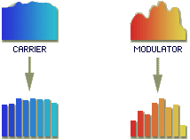
Ensuite, on modifie chaque bande de la porteuse (carrier, votre synthétiseur) pour qu'elles aient les mêmes niveaux que la modulation (modulator, votre voix) :
On les superpose.
Au final, le synthétiseur produit un son proche de votre voix, bien plus robotisé.
Pour un vocoding réussi, il faut que le synthétiseur produise un son riche en harmoniques, de sorte que le vocoder puisse toujours trouver une correspondance entre une fréquence de votre voix et celle de votre synthétiseur. Dans le cas contraire, si une fréquence qui se trouve dans votre voix est absente dans le synthétiseur, en sortie il y aura un trou et cela pourrait produire un son sourd. Donc, si vous avez un filtre qui coupe les hautes fréquences, il faut l'ouvrir. Sinon, il n'y aura aucun support pour reproduire les consonnes telles que les « s » et « t ».
Assignez le synthétiseur à une piste libre de la table de mixage et nommez-la « Carrier ». Ça veut dire porteuse en français. Assignez également votre enregistrement vocal à une piste libre de la table de mixage et nommez-la « Modulator ». Pour faire simple, votre enregistrement va moduler la porteuse.
Dans une piste libre de la table de mixage, ouvrez l'effet « Fruity Vocoder » :
Observez ce qui est entouré, on va devoir envoyer « Modulator » à gauche et « Carrier » à droite. Il faut donc tourner le bouton « Pan » de « Modulator » complètement à gauche puis l'envoyer à la piste où se trouve le vocoder (en n'oubliant pas de supprimer l'envoi sur la piste Master) :
Faites de même avec « Carrier », mais avec le bouton de « Pan » à droite. C'est bon, vous pouvez lancer la lecture et jouer quelques notes dans le synthétiseur. Essayez également avec plusieurs notes en même temps.
Paramètres
Onglet Mix
Niveau sonore de la modulation, de la porteuse et du mélange signal traité/non traité.
Onglet Freq
FORM : change la hauteur du son, haut pour féminin et bas pour masculin.
MIN/MAX : définit la plage de fréquences pour couper les hautes ou basses fréquences. Couper les fréquences qui ne sont pas présentes dans le modulateur permet d'obtenir une qualité supérieure avec moins de bandes.
SCALE : permet d'ajuster l'échelle de la fréquence (linéaire ou logarithmique).
INV : inverse la fréquence du modulateur.
BW : règle la bande passante utilisée par les filtres passe-bande utilisés pour filtrer le bruit. Régler large pour un son plus doux.
Onglet ENV
Enveloppe simple, je me passe d’explications.
BANDS
Choix du nombre de bandes ainsi que de leurs niveau. FILTER permet de choisir la qualité des filtres.
Cette méthode utilise un synthétiseur interne pour générer la porteuse (donc pas besoin d'un autre synthétiseur). Il faut pour cela insérer l'effet vocodex sur la piste où se trouve la modulation (votre voix).
Faites ensuite les réglages suivants :
MOD : 0 signifie que la source de la modulation (voix) se trouve sur la même piste que l'effet vocodex.
CAR : « --- » signifie qu'on utilise le synthétiseur propre à vocodex.
Enfin, il faut choisir le synthétiseur que vous voulez en bas de l'effet :
Production
C'est une méthode un peu plus « sérieuse », elle permet de recevoir la porteuse avec un synthétiseur externe. Cette méthode permet de recevoir les signaux de modulation et de porteuse depuis n'importe quelle piste de la table de mixage par des envois de type « sidechin ». On peut également appliquer l'effet sur une des deux sources, il faudra alors mettre la valeur 0 dans le sélecteur.
Si vous placez vos deux sources dans des pistes indépendantes de vocodex, il faut faire une liaison « sidechain » comme ceci :
Exemple de liaison « sidechain » de « modulator » à « vocoder », choisir « sidechain to this track only ».
Faire cette liaison pour les deux sources. Il faut ensuite configurer Vocodex pour qu'il sache qui est « Modulator » et qui est « Carrier » :
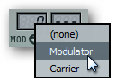
Choisissez le nom de la piste correspondante avec un clic droit.
Entrelacé
Cette méthode est destinée à remplacer les projets qui utilisent « Fruity vocoder » (souvenez-vous, modulation à gauche et porteuse à droite) par Vocodex. C'est donc en quelque sorte une mise à niveau d'anciens projets.
Il faut alors simplement remplacer « Fruity vocoder » par vocodex et cocher l'option « L-R Encoding » :
Paramètres
Ils sont nombreux, je détaillerai donc les plus importants.
Section Mixer
Cette section contrôle les niveaux de modulation et de porteuse, le routage d'entrée et fournit des commandes pour améliorer les signaux.
WET : niveaux du vocoder.
SG : niveaux de l'effet Soundgoodizer ; c'est un compresseur-maximiseur.
MOD : permet d'entendre la modulation originale (votre voix). S'utilise avec HP, c'est un filtre passe-haut.
CAR : permet d'entendre la porteuse (synthétiseur). S'utilise avec LP, c'est un filtre passe-bas.
NOISE : ajoute du bruit à la porteuse, cela permet de mieux entendre les « s » et les « t ». Un filtre passe-haut lui est appliqué.
CONTOUR : change l'enveloppe.
DRAFT : réduit l'utilisation du CPU au détriment de la qualité audio.
THREADED : utilisation multi-coeurs.
Section Envelope Follower
Ces commandes règlent la dynamique du suiveur d'enveloppe.
HOLD, ATT et REL : enveloppe classique.
PEAK/RMS : niveaux maximum/moyen.
FREEZ (flocon) : maintient la modulation.
MIN : assure que les bandes restent ouvertes un minimum de temps. Réduit le glitching.
Section Band distribution
Ces commandes règlent le nombre de bandes vocoder, leur largeur et le filtrage d'entrée. Elles sont explicites, je ne les détaillerai donc pas. De plus, il est recommandé de chercher la sonorité voulue en « bidouillant ».
Visualisation
Un menu déroulant permet de régler l'égaliseur et l'enveloppe des bandes.
Vocodex est un effet très puissant et complet. Pour pouvoir le maîtriser pleinement, il faut toucher un peu à tous les réglages, observer les changements, etc.
C'est un réglage qui sonne un peu ancien, il faut régler la découpe des bandes à 8 ou 16 pour obtenir un effet rétro avec les vocoder analogiques. Pour le synthétiseur, il nous faut une forme en dents de scie. Augmentez également légèrement l'« attack », le « release » et le « portamento » si le synthétiseur en est doté. Cela permet d'avoir une transition plus souple entre chaque note.
Vous pouvez aussi ajouter quelques variations ; par exemple ajouter un second oscillateur et le désaccorder, un générateur de bruit pour une voix plus rauque et pour des consonnes accentuées ou alors de la distorsion pour pimenter le tout.
Humain
Cette configuration privilégie le caractère humain à celui de machine. Il faut donc une découpe à plus de 32 bandes. Pour la porteuse, il nous faut un timbre vocal (choir) et du bruit.
Choir : vous en avez à disposition en passant par l'explorateur pack/legacy/choir.
Bruit : n'importe quel synthétiseur qui se respecte possède cette forme d'onde.
Avec ce réglage, on se rapproche de l'effet autotune.
Discret
Il s'agit de laisser entendre complètement la voix puis de mettre un léger traitement par-dessus pour l'embellir. Il faudra alors faire jouer le synthétiseur en accord avec le chant en utilisant des accords.
Voilà tout ce qu'il a à savoir sur le vocoding.
Certains m'ont parlé des autotune, cela n'a rien a voir avec les vocoder bien que le résultat y fasse penser.
Les autotune sont de simples correcteurs de pitch, c'est-à-dire qu'ils modifient la tonalité (la note, en quelque sorte) de la voix. Le vocoder, lui, module le son d'un synthétiseur à partir d'une source vocale. Pour ceux qui ne verraient pas la différence, un autotune n'utilise pas de synthétiseur alors que le vocoder est essentiellement basé sur ce dernier.
Je prévois de faire une partie regroupant toutes vos créations (si vous souhaitez les publier). Contactez-moi par MP si vous êtes intéressés !


{kind=link}
{kind=link}
{kind=link}
{kind=link}
{kind=link}
{kind=link}
{kind=link}